ClawBench: Can AI Agents Complete Everyday Online Tasks?
ClawBench：AI Agent 能完成日常线上任务吗
144 个真实生产平台上的 153 个 write-heavy 日常任务，CDP 拦截最终提交保证安全；最强模型仅 33.3%。
翻译范围：正文全部段落走三步精翻（直译→反思→雅化）；脚注与参考文献不译；公式、数字、模型名、数据集名、引用标记按原文 Unicode 保真；表格还原为可复制文本。
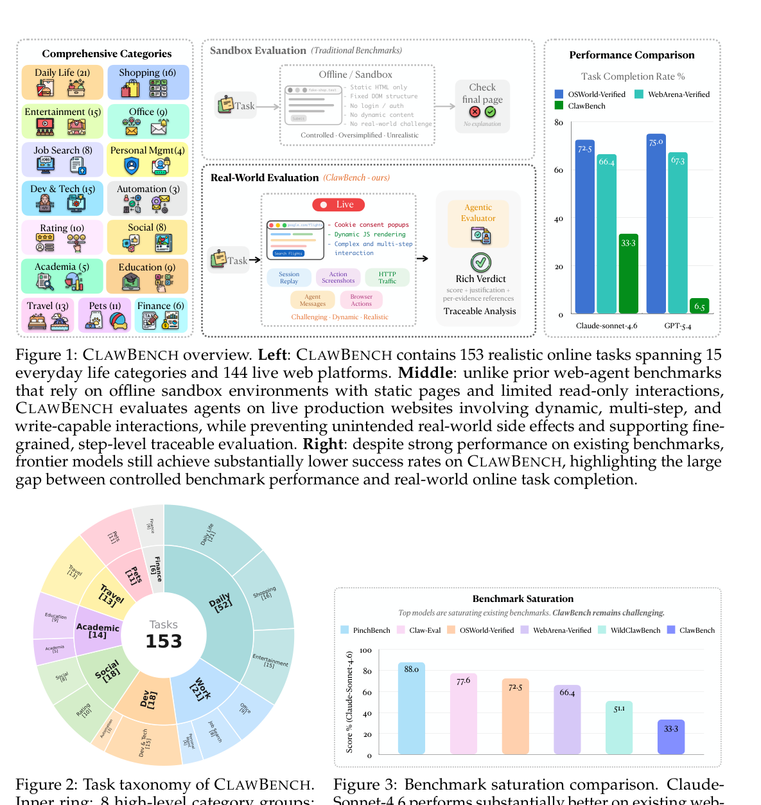
Figure 1: CLAWBENCH overview. Left: CLAWBENCH contains 153 realistic online tasks spanning 15 everyday life categories and 144 live web platforms. Middle: unlike prior web-agent benchmarks that rely on offline sandbox environments with static pages and limited read-only interactions, CLAWBENCH evaluates agents on live production websites involving dynamic, multi-step, and write-capable interactions, while preventing unintended real-world side effects and supporting fine- grained, step-level traceable evaluation. Right: despite strong performance on existing benchmarks, frontier models still achieve substantially lower success rates on CLAWBENCH, highlighting the large gap between controlled benchmark performance and real-world online task completion.
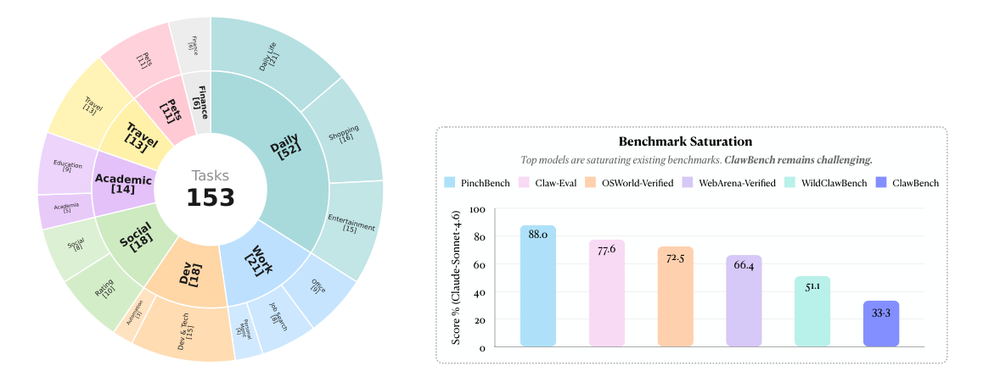
Figure 2: Task taxonomy of CLAWBENCH. Inner ring: 8 high-level category groups; outer ring: 15 fine-grained categories.
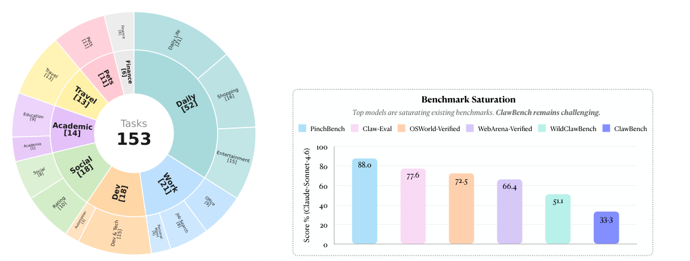
Figure 3: Benchmark saturation comparison. Claude- Sonnet-4.6 performs substantially better on existing web- agent benchmarks than on CLAWBENCH.
Table 1
| Benchmark Environment # | Tasks # | Sites Task Type Verification Recording Human Traj. |
|---|---|---|
| Mind2Web (Deng et al., 2023) Offline (static traces) | 2,350 | 137 Read-only Action seq. match None Partial (action seq.) |
| WebArena (Zhou et al., 2024) Sandbox (self-hosted) | 812 | 5 Mixed Script-based None ✗ |
| VisualWebArena (Koh et al., 2024) Sandbox (self-hosted) | 910 | 3 Mixed Script-based None ✗ |
| OSWorld (Xie et al., 2024) Sandbox (VM) | 369 | 9 Mixed Script + screenshot Screenshot ✗ |
| WebVoyager (He et al., 2024) Real Web | 643 | 15 Read-only LLM-as-judge Screenshot ✗ |
| TheAgentCompany (Xu et al., 2026) Sandbox (self-hosted) | 175 | 6 Mixed Checkpoint-based None ✗ |
| Online-Mind2Web (Xue et al., 2025) Real Web | 300 | 136 Read-only Human + LLM judge Screenshot ✗ |
| EconWebArena (Liu & Quan, 2025) Real Web | 360 | 82 Read-only Exact numeric + URL None ✗ |
| Claw-Eval (Ye et al., 2026) Sandbox (Docker + FastAPI) | 139 | 15 Mixed API state check CLI logs ✗ |
| ClawBench (Ours) Real Web | 153 | 144 Write-heavy Agent-as-Judge 5-Layer ✓(all tasks) |
Table 3
| Rank | Model | Overall | Avg. Cost | Avg. Token | Task | Categories | ||||||
|---|---|---|---|---|---|---|---|---|---|---|---|---|
| Daily | Finance | Work | Dev | Academic | Travel | Social | Pets | |||||
| 1 | Claude Sonnet 4.6 | 33.3 | $7.51 | 5.47M | 44.2 | 50.0 | 19.0 | 11.1 | 50.0 | 23.1 | 38.9 | 18.2 |
| 2 | Qwen 3.5 | 26.1 | $1.02 | 2.52M | 25.0 | 50.0 | 28.6 | 22.2 | 28.6 | 30.8 | 22.2 | 18.2 |
| 3 | GLM-5 | 24.2 | $0.64 | 3.33M | 30.8 | 16.7 | 38.1 | 16.7 | 28.6 | 0.0 | 16.7 | 18.2 |
| 4 | Gemini 3 Flash | 19.0 | $1.55 | 5.81M | 15.4 | 33.3 | 23.8 | 22.2 | 28.6 | 30.8 | 11.1 | 0.0 |
| 5 | Claude Haiku 4.5 | 18.3 | $1.68 | 4.56M | 15.4 | 33.3 | 19.0 | 27.8 | 21.4 | 7.7 | 16.7 | 18.2 |
| 6 | Gemini 3.1 Pro | 9.8 | $3.34 | 3.16M | 5.8 | 16.7 | 9.5 | 22.2 | 14.3 | 15.4 | 5.6 | 0.0 |
| 7 | GPT-5.4 | 6.5 | $1.91 | 2.66M | 9.6 | 0.0 | 0.0 | 11.1 | 7.1 | 7.7 | 0.0 | 9.1 |
| 8 | Gemini 3.1 Flash Lite | 3.3 | $0.11 | 1.18M | 1.9 | 0.0 | 0.0 | 5.6 | 14.3 | 0.0 | 0.0 | 9.1 |
Table 4表 4 将表 3 的八个高层类别展开为基准分类法所用的 15 个细粒度类别。该表是细类别编码批次覆盖的六个模型的诊断性细分；正文排行榜仍是权威的 8 模型结果。
| Claude | Gemini | Claude | Gemini 3.1 | ||||
|---|---|---|---|---|---|---|---|
| Category | Tasks | Sonnet 4.6 | GLM-5 | 3 Flash | Haiku 4.5 | GPT-5.4 | Flash Lite |
| Ed ti | 9 | 0 44 | 0 33 | 0 33 | 0 33 | 0 11 | 0 11 |
Table 5表 5 报告 153 个任务上的墙钟时长、工具调用次数、消息数、请求数、超时率及通过/失败时长拆分。该表与正文图 6 互补：图是两个代表性模型的特写，表则把全部八个智能体放到同一行为尺度上比较。
| Model | #runs med. dur p90 dur | tool calls | msgs | reqs | timeout % pass dur fail dur |
|---|---|---|---|---|---|
| Sonnet 4.6 | 153 593 1829 | 61 | 60 | 710 | 17.0 698 540 |
| Qwen 3.5 | 153 621 1233 | 37 | 37 | 535 | 5.2 669 620 |
| GLM-5 | 153 1734 1835 | 61 | 60 | 718 | 48.4 1089 1829 |
| Gem-3 Flash | 153 720 1806 | 60 | 61 | 657 | 10.5 605 764 |
| Haiku 4.5 | 153 577 1035 | 63 | 63 | 773 | 2.0 594 577 |
| Gem-3.1 Pro | 153 931 1835 | 39 | 38 | 380 | 35.3 646 1066 |
| GPT-5.4 | 153 196 684 | 4 | 3 | 0 | 3.9 437 188 |
| Gem-3.1 FL | 153 456 835 | 16 | 17 | 357 | 7.2 313 460 |
| Human | 153 266 445 | – | 0 | 777 | 0.0 – 266 |
| Sonnet 4.6 | 51P/102F | ||||
| Qwen 3.5 | 40P/113F | ||||
| GLM-5 | 37P/116F | ||||
| Gemini 3 Flash | 29P/124F | ||||
| Haiku 4.5 | 28P/125F | ||||
| Gemini 3.1 Pro | 15P/138F | ||||
| GPT 5.4 | 10P/143F | ||||
| Gemini 3.1 FL | 5P/148F | ||||
| 0 | 50 100 150 200 250 | 300 350 | 0 | 50 | 100 150 200 250 300 |
| Sonnet 4.6 | (a) Browser actions | (b) Tool / message count | |||
| Qwen 3.5 | |||||
| GLM-5 | |||||
| Gemini 3 Flash | |||||
| Haiku 4.5 | |||||
| Gemini 3.1 Pro | |||||
| GPT 5.4 | |||||
| Gemini 3.1 FL | 102 | 103 | −100 | 0 | 100 101 102 103 |
| (c) Wall-clock duration (s, log) | pass | fail | (d) HTTP requests (symlog) | ||
| Fi 11 P | f il di ib i | f | i | i d l H i l |
Table 6
| Failure mode | Count | Representative trace evidence |
|---|---|---|
| A ti b t ll | 8 | “Cl dfl T til i i ibl |
Table 8
| Metric Human Agent Gap |
|---|
| Key interval 191–271 ms 3–16 ms 15–90× |
| < 20 ms keys ∼0.01 0.83–1.00 unnatural |
| Mouse Present None missing |
| Click interval ∼6.1 s ∼16.4 s 2.7× slower |
| Scroll Fine Coarse unnatural |
Table 9
| Item | Status | Notes |
|---|---|---|
| Task definitions released | ✓ | The 153-task benchmark is released with task in- |
| structions and metadata. | ||
| Execution traces released | ✓ | The released trace corpus contains browser record- |
| ings, action logs, agent messages, and network evi- | ||
| dence for evaluated runs. | ||
| Evaluation protocol docu- | ✓ | Section 2.3 defines Agent-as-Judge and the task- |
| mented | level scoring rule. | |
| Browser recording stack docu- | ✓ | The implementation appendix summarizes the ex- |
| mented | tension and recorded data format. | |
| Model harness documented | ✓ | Section 3 describes the shared OpenClaw browser- |
| agent harness and evaluated models. | ||
| Task execution prompt in- | ✓ | Appendix Section D.1 lists the task execution |
| cluded | prompt. | |
| Evaluator prompt included | ✓ | Appendix Section D.2 lists the evaluator criteria. |
| Human reference protocol doc- | ✓ | Section 2.1 describes task construction and human |
| umented | reference trajectories. | |
| Safety mechanism docu- | ✓ | Section 2.2 describes final-request interception and |
| mented | its task-scoped safety envelope. | |
| Known limitations docu- | ✓ | Section 4 and the ethics statement discuss live-web |
| mented | safety and reproducibility limits. |
ClawBench: Can AI Agents Complete Everyday Online Tasks?
ClawBench：AI Agent 能完成日常线上任务吗？
Yuxuan Zhang 1,2,3,§, Yubo Wang 2,5, Yipeng Zhu 1, Penghui Du 3, Junwen Miao 4, Xuan Lu 6, Zhuofeng Li 5, Xingwei Qu 12, Zhengkang Guo 13, Yuanzhe Shen 13, Dingjie Song 14, Han Zhou 3, Tuney Zheng 5, Xian Wu 3, Hao Yu 10, Songcheng Cai 5, Yi Lu 5, Yunzhuo Hao 5, Minyi Lei 5, Liang Chen 7,†, Kai Zou 11, Huifeng Yin 7, Wendong Xu 7,§, Dongfu Jiang 2,5,†, Ping Nie 5,§, Jiaheng Liu 15, Wenhu Chen 2,5,†, Kelsey R. Allen 1,2,†
Yuxuan Zhang 1,2,3,§, Yubo Wang 2,5, Yipeng Zhu 1, Penghui Du 3, Junwen Miao 4, Xuan Lu 6, Zhuofeng Li 5, Xingwei Qu 12, Zhengkang Guo 13, Yuanzhe Shen 13, Dingjie Song 14, Han Zhou 3, Tuney Zheng 5, Xian Wu 3, Hao Yu 10, Songcheng Cai 5, Yi Lu 5, Yunzhuo Hao 5, Minyi Lei 5, Liang Chen 7,†, Kai Zou 11, Huifeng Yin 7, Wendong Xu 7,§, Dongfu Jiang 2,5,†, Ping Nie 5,§, Jiaheng Liu 15, Wenhu Chen 2,5,†, Kelsey R. Allen 1,2,†
1University of British Columbia 2Vector Institute 3Etude AI 4Carnegie Mellon University 5University of Waterloo 6SJTU 7UniPat AI 9HKUST 10Tsinghua University 11Netmind.ai
1University of British Columbia 2Vector Institute 3Etude AI 4Carnegie Mellon University 5University of Waterloo 6SJTU 7UniPat AI 9HKUST 10Tsinghua University 11Netmind.ai
12University of Manchester 13Fudan University 14Lehigh University 15Nanjing University https://claw-bench.com
12University of Manchester 13Fudan University 14Lehigh University 15Nanjing University https://claw-bench.com
arXiv:2604.08523v2 [cs.CL] 20 Jul 2026
arXiv:2604.08523v2 [cs.CL] 20 Jul 2026
§Project Lead. †Advisors.
§项目负责人。†指导教师。
1
1
Abstract摘要
AI agents may be able to assist with emails and documents, but can they reliably complete everyday online workflows on real websites? Everyday online tasks offer a realistic yet unsolved testbed for evaluating the next generation of AI agents. To this end, we introduce CLAWBENCH, an evalu- ation framework comprising 153 everyday online tasks that people need to accomplish regularly in their lives and work, spanning 144 platforms across 15 categories, from completing purchases and booking appointments to sub- mitting job applications. These tasks require capabilities beyond existing benchmarks, such as obtaining relevant information from user-provided documents, navigating multi-step workflows across diverse platforms, and write-heavy operations like filling in many detailed forms correctly. Unlike existing benchmarks that evaluate agents in offline sandboxes with static pages, CLAWBENCH operates on production websites, preserving the full complexity, dynamic nature, and interaction challenges of real-world web environments. An interception layer captures and blocks the final sub- mission request, ensuring safe evaluation without real-world side effects. Our evaluations of 8 frontier models show that both proprietary and open- source models complete only a small portion of these tasks. For example, Claude Sonnet 4.6 achieves only 33.3%, which exposes gaps in current AI agents. Progress on CLAWBENCH brings us closer to AI agents that can function as general-purpose assistants.
AI 智能体或许已能协助处理邮件与文档，但它们能否可靠地完成真实网站上的日常线上工作流？日常线上任务为评估下一代 AI 智能体提供了真实而悬而未决的试验场。为此，我们提出 CLAWBENCH：一个覆盖 15 个类别、144 个平台的评估框架，内含 153 项人们在工作与生活中需定期完成的线上任务——从完成购物、预约日程到提交求职申请。这些任务对能力的要求远超现有基准：既要能从用户提供的文档中提取相关信息、在异构平台上导航多步工作流，又要能正确填写大量细节繁多的表单——典型的重写入操作。现有基准大多在离线沙盒中以静态页面评估智能体；CLAWBENCH 则直接运行于生产级网站，完整保留真实网页环境的复杂性、动态性与交互挑战。拦截层会捕获并阻断最终提交请求，确保评估全程不产生真实副作用。对 8 个前沿模型的评测显示，无论专有还是开源模型，都只能完成其中一小部分任务——Claude Sonnet 4.6 也仅得 33.3%——足以暴露当前 AI 智能体的短板。在 CLAWBENCH 上的每一次进展，都让我们离能胜任通用助手角色的 AI 智能体更近一步。
1Introduction1 引言
Existing web-agent benchmarks cover important slices of browser use, but none jointly eval- uates daily-life, write-heavy tasks on live production websites with safe, traceable scoring. Static-trace benchmarks such as Mind2Web (Deng et al., 2023) evaluate action prediction over recorded pages rather than task execution. Sandboxed or self-hosted benchmarks such as WebArena (Zhou et al., 2024), VisualWebArena (Koh et al., 2024), OSWorld (Xie et al., 2024), and TheAgentCompany (Xu et al., 2026) provide controlled environments, but necessarily abstract away the instability and heterogeneity of production websites. Real-web benchmarks such as WebVoyager (He et al., 2024), AssistantBench (Yoran et al., 2024), Online-Mind2Web (Xue et al., 2025), and EconWebArena (Liu & Quan, 2025) move evaluation to live websites, but focus primarily on read-only information acquisition or answer extraction rather than state-changing workflows. Claw-Eval (Ye et al., 2026) studies trajectory-aware grading in controlled agent settings, but does not evaluate broad everyday transactions across live platforms.
现有网页智能体基准覆盖了浏览器使用的重要侧面，却尚无工作能在真实生产网站上联合评估日常生活类、重写入任务，并保证评分安全、可追踪。静态轨迹基准（如 Mind2Web (Deng et al., 2023)）评估的是录制页面上的动作预测，而非任务执行；沙盒或自托管基准（如 WebArena (Zhou et al., 2024)、VisualWebArena (Koh et al., 2024)、OSWorld (Xie et al., 2024) 与 TheAgentCompany (Xu et al., 2026)）提供了受控环境，却不可避免地剥离了生产网站的不稳定性与异构性；真实网页基准（如 WebVoyager (He et al., 2024)、AssistantBench (Yoran et al., 2024)、Online-Mind2Web (Xue et al., 2025) 与 EconWebArena (Liu & Quan, 2025)）虽将评估搬到实时网站，却主要关注只读的信息获取或答案提取，而非改变状态的工作流。Claw-Eval (Ye et al., 2026) 研究受控智能体环境中的轨迹感知评分，但同样未涉及跨实时平台的广泛日常交易。
The missing target is whether AI agents can actually complete everyday online tasks that change, or attempt to change, real web state. Such tasks include purchases, reservations, applications, account updates, and detailed form submissions, where success depends on navigating real interfaces, satisfying platform-specific validation logic, handling authenti- cation or verification flows, and reaching a terminal action that would modify server-side state. This setting is central to general online assistance, but it creates a difficult evaluation problem: the benchmark must preserve the real website while preventing orders, appli- cations, reservations, or other irreversible side effects from actually reaching production servers.
真正缺失的评估目标，是 AI 智能体能否完成那些会改变——或试图改变——真实网页状态的日常线上任务：购买、预订、申请、账户更新与详单式表单提交。其成败系于一线：能否在真实界面中导航、满足平台特有的验证逻辑、通过身份认证或核验流程，并最终触发一个会修改服务器端状态的终结动作。这一场景是通用线上协助的核心，却也构成严峻的评估难题——基准既须保留真实网站，又必须防止订单、申请、预订等不可逆副作用真正抵达生产服务器。
We introduce CLAWBENCH, a benchmark designed around three properties missing in combination from prior work. (1) Daily-life coverage. CLAWBENCH contains 153 everyday online tasks across 15 life categories and 144 live platforms, as shown in Figure 1. (2) Write- heavy workflows. Tasks require state-changing interactions such as purchases, reservations, applications, account updates, and detailed form submissions, rather than only information lookup. (3) Live-web execution with safe evaluation. Agents operate on production websites, preserving dynamic interfaces, authentication flows, platform-specific validation, and anti- bot defenses, while CLAWBENCH blocks the final action that would create real-world side effects.
我们提出 CLAWBENCH，其设计针对先前工作未曾同时具备的三项特性。(1) 日常生活覆盖：CLAWBENCH 收录 153 个日常线上任务，横跨 15 个生活类别与 144 个实时平台（见图 1）。(2) 重写入工作流：任务要求改变状态的交互——购买、预订、申请、账户更新与详单式表单提交——而非仅作信息查询。(3) 实时网页执行与安全评估：智能体在生产网站上运行，直面动态界面、认证流程、平台特有验证与反爬虫防御；而那一步将产生真实副作用的最终动作，会被 CLAWBENCH 拦下。
2
2
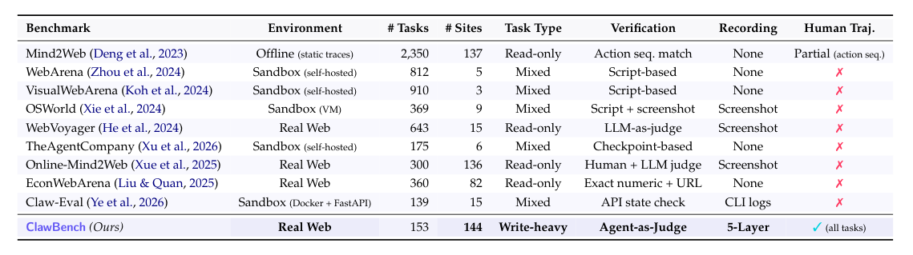
Table 1: Comparison with current web-agent benchmarks. CLAWBENCH uniquely combines live production websites, write-heavy tasks, human-authored reference trajectories, and multi-layer be- havioral recording.
The key safety mechanism in CLAWBENCH is final-request interception. For each task, human annotators complete the workflow and identify the terminal HTTP request that would commit the irreversible action. During agent execution, a Chrome extension records browser actions while a Chrome DevTools Protocol (CDP) based instrumentation server monitors outgoing network traffic, captures the terminal request and its payload, and blocks that request before it reaches the server. All preceding page loads, searches, authentication steps, JavaScript calls, and form-filling interactions proceed on the website, preserving ecological validity while preventing real-world side effects.
CLAWBENCH 的核心安全机制是最终请求拦截。每个任务由人工标注者预先完整走通工作流，定位出将提交不可逆动作的终结 HTTP 请求。智能体执行时，Chrome 扩展记录浏览器动作，基于 Chrome DevTools Protocol (CDP) 的插桩服务器则监控出站网络流量：一旦捕获终结请求及其载荷，即在请求抵达服务器前将其阻断。此前的页面加载、搜索、身份认证、JavaScript 调用与表单填写均照常进行——真实副作用被杜绝，生态有效性得以保全。
We evaluate each run with an Agent-as-Judge evaluator rather than a URL, DOM, or final-page heuristic. CLAWBENCH records each run as a five-layer trajectory: full-session video, per-step screenshots, HTTP traffic, agent messages, and low-level browser actions. Human annotators produce a reference trajectory and intercepted reference payload for every task under the same setup. Given the task instruction, the human reference, the agent trajectory, and the intercepted payload, the Agent-as-Judge assigns a binary task- level verdict with a structured justification grounded in evidence. At a high level, a run passes when the agent completes the required workflow and either reaches the intercepted final request with correct or semantically equivalent payload values, or is blocked at an allowed terminal point after completing all required prior steps; it fails when key fields are wrong or missing, the agent stops before attempting the terminal action, or external blockers prevent task completion under the evaluation rubric. We further audit this protocol on human-adjudicated subsets covering two contrastive models, where Agent-as-Judge reaches 84.97–93.46% raw agreement with human verdicts (Table 2); an expanded four- model breakdown is reported in Appendix B.1.
每次运行均由 Agent-as-Judge 评估器打分，不依赖 URL、DOM 或末页启发式规则。CLAWBENCH 将每次运行记录为五层轨迹：完整会话视频、逐步截图、HTTP 流量、智能体消息与底层浏览器动作。人工标注者在完全相同的设置下为每个任务生成参考轨迹及被拦截的参考载荷。给定任务指令、人类参考、智能体轨迹与被拦截载荷，Agent-as-Judge 给出二元任务级判定，并附基于证据的结构化理由。总体而言：智能体完成全部必需工作流后，若以正确或语义等价的载荷值抵达被拦截的最终请求，或在完成所有前置步骤后于某个允许的终结点被阻断，则判定通过；若关键字段错误或缺失、智能体在尝试终结动作前即停止，或按评分规则外部因素致使任务无法完成，则判定失败。我们还在由人工裁决、覆盖两个对比模型的子集上审计了该协议：Agent-as-Judge 与人类判定的原始一致率达 84.97–93.46%（表 2）；扩展的四模型细分结果见附录 B.1。
We evaluate 8 frontier models under a shared browser-agent harness and find that current agents remain far from reliable real-world online assistants. All models are instantiated in the same OpenClaw browser-agent harness, which provides a Chromium browser and fixed actions such as navigation, clicking, typing, scrolling, and page observation. Claude Sonnet 4.6 reaches the highest success rate at only 33.3%, followed by Qwen 3.5 at 26.1% and GLM-5 at 24.2%, while GPT-5.4 reaches only 6.5%. These scores are far below the same agents’ reported results on established web-agent benchmarks such as OSWorld (Xie et al., 2024) and WebArena (Zhou et al., 2024).
我们在统一的浏览器智能体 harness 下评测 8 个前沿模型，发现当前智能体距离可靠的真实世界线上助手仍相去甚远。所有模型均在同一 OpenClaw 浏览器智能体 harness 中实例化：该 harness 提供 Chromium 浏览器及导航、点击、输入、滚动、页面观察等固定动作。Claude Sonnet 4.6 成功率最高，也仅为 33.3%；Qwen 3.5 为 26.1%，GLM-5 为 24.2%，GPT-5.4 则只有 6.5%。这些成绩远低于同一批智能体在 OSWorld (Xie et al., 2024)、WebArena (Zhou et al., 2024) 等既有网页智能体基准上的已报告水平。
The trace analysis reveals that failures are not merely high-level reasoning errors. Agents are frequently blocked by anti-bot and verification systems, produce non-human interaction patterns such as unnatural typing and missing mouse dynamics, refuse benign but conse- quential user tasks due to safety policies, or stop before the final transactional action. These findings suggest that progress toward reliable online assistants requires not only better planning and perception, but also behaviorally grounded interaction models and robust handling of production-site constraints.
轨迹分析表明，失败并非仅源于高层推理错误：智能体常常被反爬虫与验证系统拦下，表现出非人类式的交互模式（机械的键入节奏、缺失的鼠标动态），或因安全策略拒接良性却后果实际的用户任务，抑或在最终交易动作前戛然而止。这些发现说明，要构建可靠的线上助手，除更强的规划与感知外，还需要具备行为学依据的交互模型，以及对生产网站约束的稳健处理。
Our contributions are summarized as follows:
本文贡献如下：
(1) We introduce CLAWBENCH, a 153-task benchmark spanning 15 life categories and 144 live platforms, targeting write-heavy, state-changing workflows largely avoided by existing benchmarks.
(1) 我们提出 CLAWBENCH：一个含 153 个任务、覆盖 15 个生活类别与 144 个实时平台的基准，瞄准现有基准普遍回避的重写入、改变状态的工作流。
3
3
(2) We design a safe live-web evaluation infrastructure based on final-request interception, allowing agents to interact with production websites while blocking the terminal HTTP request that would create real-world side effects.
(2) 我们设计了基于最终请求拦截的安全实时网页评估基础设施：智能体可与生产网站正常交互，而将产生真实副作用的终结 HTTP 请求会被拦截。
(3) We develop a five-layer trajectory recording pipeline and an Agent-as-Judge evaluation protocol that compares agent runs against human reference trajectories and produces traceable binary verdicts.
(3) 我们开发了五层轨迹记录管线与 Agent-as-Judge 评估协议：将智能体运行与人类参考轨迹对照，给出可追溯的二元判定。
(4) We benchmark eight frontier models under a shared browser-agent harness, showing that strong performance on existing web-agent benchmarks does not transfer to everyday write-heavy tasks on live production websites.
(4) 我们在统一的浏览器智能体 harness 下对八个前沿模型进行基准测试，结果表明：在既有网页智能体基准上的强劲表现，并不能迁移到真实生产网站的日常重写入任务。
(5) We provide trace-level failure analysis revealing concrete, recurring bottlenecks in current web agents, including anti-bot blocking, unnatural interaction behavior, safety refusals, and incomplete transactional workflows.
(5) 我们给出轨迹级失败分析，揭示了当前网页智能体反复出现的具体瓶颈：反爬虫拦截、不自然的交互行为、安全拒答以及不完整的交易工作流。
2Benchmark2 基准
CLAWBENCH is designed to evaluate whether AI agents can complete everyday, write- heavy online tasks on live production websites. It is built around three design choices: tasks are sourced from daily-life web use rather than synthetic page templates; agents interact with the live web while final-request interception blocks irreversible side effects; and each run is evaluated from five-layer trace recording by an Agent-as-Judge. Table 1 positions CLAWBENCH relative to prior web-agent benchmarks, and the overall pipeline (task definition, live-web execution, trace-based evaluation) is described in this section.
CLAWBENCH 旨在评估 AI 智能体能否在实时生产网站上完成日常的重写入线上任务，其设计建立在三个选择之上：任务源自真实日常网页使用，而非合成页面模板；智能体与实时网页交互，最终请求拦截负责阻断不可逆副作用；每次运行由 Agent-as-Judge 依据五层轨迹记录评估。表 1 将 CLAWBENCH 与既有网页智能体基准作了定位对比；本节随后描述整体管线——任务定义、实时网页执行与基于轨迹的评估。
Positioning. CLAWBENCH occupies a different point in the benchmark design space from static-trace datasets such as Mind2Web (Deng et al., 2023), self-hosted browser environments such as WebArena (Zhou et al., 2024) and VisualWebArena (Koh et al., 2024), and live-web benchmarks that primarily target read-only information seeking such as WebVoyager (He et al., 2024) and Online-Mind2Web (Xue et al., 2025). Those settings are valuable for controlled evaluation, but they avoid many production-site constraints that matter for delegated online assistance. CLAWBENCH instead evaluates whether agents can carry user- specific information through live, write-heavy workflows while a task-scoped interceptor blocks the final irreversible request.
定位。在基准设计空间中，CLAWBENCH 的位置不同于三类既有工作：以 Mind2Web (Deng et al., 2023) 为代表的静态轨迹数据集，以 WebArena (Zhou et al., 2024)、VisualWebArena (Koh et al., 2024) 为代表的自托管浏览器环境，以及以 WebVoyager (He et al., 2024)、Online-Mind2Web (Xue et al., 2025) 为代表、主要面向只读信息获取的真实网页基准。这些环境固然利于受控评估，却回避了大量对委托式线上协助至关重要的生产网站约束。CLAWBENCH 检验的则是：在任务级拦截器阻断最终不可逆请求的前提下，智能体能否在实时重写入工作流中携带用户特定信息一路走通。
2.1Task Design and Collection2.1 任务设计与收集
CLAWBENCH focuses on tasks that ordinary users delegate in daily life but that existing web benchmarks often avoid: write-heavy tasks that submit information, reserve services, place orders, fill applications, create listings, or otherwise move a live website toward a state-changing final action. These tasks are harder to evaluate than read-only search or sandbox clicking because success depends not only on finding the right page, but also on entering correct user-specific information, satisfying platform-specific validation, and reaching a terminal state that would normally modify server-side state. This makes them a direct test of everyday online assistance rather than a proxy for web navigation alone.
CLAWBENCH 聚焦于普通用户日常会委托、而现有网页基准往往回避的任务：提交信息、预订服务、下单、填写申请、发布挂牌——推动真实网站走向状态改变之终结动作的重写入任务。这类任务远比只读搜索或沙盒点击难评估：成功不仅要求找到正确页面，还要求录入正确的用户信息、通过平台特有验证，并抵达通常意味着修改服务器端状态的终结状态。因此，它们是对日常线上协助的直接检验，而非网页导航能力的替代指标。
We construct tasks from user-grounded website use and then convert them into auditable task cards. Participants list websites they regularly use and propose realistic tasks involving information submission; annotators then formalize each candidate with a natural-language instruction, starting URL, required user files or profile fields, expected final state, and the terminal submission target used for safe evaluation. The candidate pool is de-duplicated and manually filtered to remove unsuitable workflows, including read-only lookups, un- available or geographically restricted sites, paid subscriptions, tasks requiring real monetary payment without a safe interception point, hard human-verification such as mandatory phone OTP or government-ID checks, and workflows whose irreversible effects cannot be controlled through a single terminal HTTP request. For each retained task, a human annotator completes the workflow inside the same recording environment, producing a human reference trajectory and the corresponding terminal submission evidence.
任务源自真实用户的网站使用，随后整理为可审计的任务卡：参与者先列出常用网站，提出涉及信息提交的现实任务；标注者再将候选任务形式化，写明自然语言指令、起始 URL、所需用户文件或资料字段、期望最终状态，以及用于安全评估的终结提交目标。候选池经去重与人工筛选，剔除不合适的工作流：只读查询，无法访问或受地域限制的网站，付费订阅，无安全拦截点却涉及真实货币支付的任务，强制电话 OTP 或身份证件核验等高门槛人工验证，以及不可逆效果无法由单个终结 HTTP 请求控制的工作流。对每个保留任务，一名标注者在同一录制环境中完整走通工作流，产出人类参考轨迹及对应的终结提交证据。
4
4
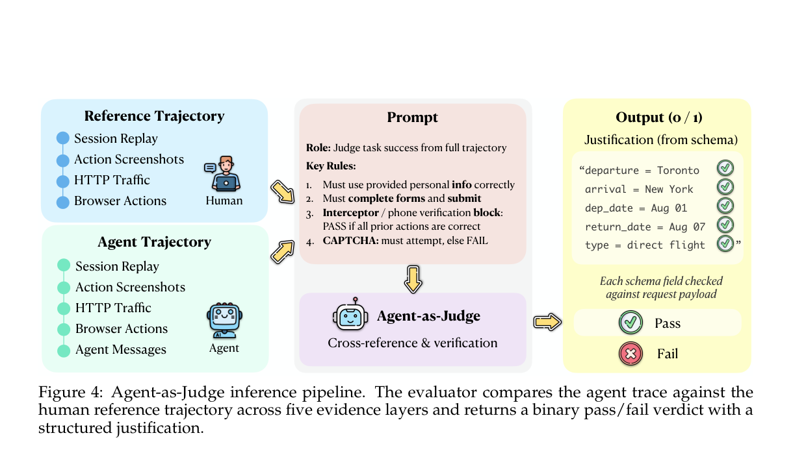
Figure 4: Agent-as-Judge inference pipeline. The evaluator compares the agent trace against the human reference trajectory across five evidence layers and returns a binary pass/fail verdict with a structured justification.
CLAWBENCH contains 153 tasks across 144 live production websites, organized into 8 high- level category groups and 15 fine-grained categories, as shown in Figure 2. This breadth-first design deliberately favors coverage across heterogeneous everyday platforms over repeated tasks on a small number of sites. It tests whether agents can generalize across changing interfaces, authentication flows, form structures, validation logic, and anti-automation defenses, rather than overfitting to a few familiar benchmark environments.
如图 2 所示，CLAWBENCH 收录 153 个任务，分布于 144 个实时生产网站，归纳为 8 个高层类别组与 15 个细粒度类别。这一广度优先的设计刻意强调对异构日常平台的覆盖，而非在少数网站上堆叠重复任务——它检验的是智能体能否在多变的界面、认证流程、表单结构、验证逻辑与反自动化防御之间泛化，而非过拟合于少数熟悉的基准环境。
2.2Safe Live-Web Execution2.2 安全的实时网页执行
The key safety challenge is that write-heavy tasks normally create irreversible side effects on production servers. CLAWBENCH addresses this with final-request interception: during the human reference run, an annotator identifies the terminal HTTP request that would commit the task, including its URL pattern, HTTP method, and required payload fields. At runtime, a Chrome extension and CDP instrumentation server monitor outgoing HTTP requests; when an agent triggers a request matching the terminal submission target, the system captures the payload, blocks the request before it reaches the server, and records the interception event for evaluation. All other traffic, including page loads, images, and analytics requests, proceeds normally, so the agent still faces the real interface dynamics of the live production website.
安全挑战的核心在于：重写入任务通常会在生产服务器上留下不可逆的副作用。CLAWBENCH 以最终请求拦截应对。人类参考运行阶段，标注者识别出将提交任务的终结 HTTP 请求及其 URL 模式、HTTP 方法与必需载荷字段；运行阶段，Chrome 扩展与 CDP 插桩服务器持续监控出站 HTTP 请求，一旦智能体触发与终结提交目标匹配的请求，系统即捕获载荷、在请求抵达服务器前将其阻断，并记录拦截事件供评估使用。其余流量——页面加载、图片、统计请求——均照常放行；智能体面对的，仍是真实生产网站的完整界面动态。
This design creates a task-scoped safety envelope, not a general guarantee that arbitrary browsing is side-effect-free. Safety holds for the audited terminal endpoints under each task’s annotated scope: the benchmark blocks the request that would submit the order, reservation, application, message, or other irreversible final action, while preserving the rest of the website interaction. Accordingly, CLAWBENCH excludes workflows whose side effects cannot be bounded by a single annotated terminal request, including uncontrolled account-setting changes, real payments or subscriptions without a safe interception point, hard human-verification gates, and chained irreversible intermediate writes. In a validation study over all 153 tasks, the extension blocked the annotated terminal request in 100% of human reference runs with zero false positives on navigation traffic.
这一设计提供的是任务范围内的安全边界，而非任意浏览皆无副作用的普遍保证。安全性成立于各任务标注范围内的已审计终结端点：基准拦截的，是将提交订单、预订、申请、消息或其他不可逆最终动作的请求；网站的其余交互不受影响。因此，CLAWBENCH 排除副作用无法由单个标注终结请求限定的工作流：不受控的账户设置更改、无安全拦截点的真实支付或订阅、高门槛人工验证，以及链式的不可逆中间写入。在覆盖全部 153 个任务的验证研究中，该扩展在 100% 的人类参考运行中成功拦截标注终结请求，导航流量零误报。
2.3Trace-Based Evaluation2.3 基于轨迹的评估
CLAWBENCH records every run as synchronized evidence for both evaluation and diagnosis. The five-layer trace recording consists of session video, action screenshots, HTTP traffic, agent messages, and browser actions: these layers capture what the agent saw, what it reasoned, what it did, and what network effects its actions produced. Human annotators produce reference trajectories under the same recording setup, making agent and human runs comparable by page state, action sequence, submitted fields, and terminal payload.
CLAWBENCH 将每次运行同步记录为兼具评估与诊断用途的证据。五层轨迹记录——会话视频、动作截图、HTTP 流量、智能体消息与浏览器动作——分别回答四个问题：智能体看到了什么、如何推理、做了什么、其动作产生了何种网络效果。人工标注者在完全相同的录制设置下生成参考轨迹，使智能体与人类的运行可就页面状态、动作序列、提交字段和终结载荷逐项比对。
5
5
As shown in Figure 4, each run is scored by Agent-as-Judge. In our implementation, Agent- as-Judge is instantiated with Claude Sonnet 4.6 as the underlying model and uses a fixed evaluation prompt for all agent runs. It receives the task instruction, task-card constraints, the human reference trajectory, the agent trace, and the intercepted payload when available. It returns a binary pass/fail verdict with a structured justification grounded in the recorded evidence. The protocol is outcome-oriented: human reference trajectory specifies target final state and concrete field bindings, but the agent need not follow the same path if it reaches an equivalent terminal state.
如图 4 所示，每次运行由 Agent-as-Judge 打分。在我们的实现中，Agent-as-Judge 以 Claude Sonnet 4.6 为底层模型，对所有智能体运行采用固定评估提示；其输入包括任务指令、任务卡约束、人类参考轨迹、智能体轨迹，以及（如可用）被拦截的载荷，输出为二元通过与失败判定并附基于记录证据的结构化理由。该协议以结果为导向：人类参考轨迹只规定目标最终状态与具体字段绑定，智能体无需复现相同路径，抵达等价的终结状态即可。
For each task t ∈T, let q(t) denote the task instruction, T (t)
对每个任务 t ∈T，令 q(t) 表示任务指令，T (t)
a the recorded agent trajectory,
a 为记录的智能体轨迹，
and T (t)
以及 T (t)
h the recorded human reference trajectory. Agent-as-Judge A maps these inputs to a binary task-level verdict:
h 为记录的人类参考轨迹。Agent-as-Judge A 将这些输入映射为二元任务级判定：
q(t), T (t)
q(t), T (t)
a , T (t)
a , T (t)
Score(t) = A
Score(t) = A
, (1)
, (1)
where Score(t) ∈{0, 1}. The overall success rate over a task set T is
其中 Score(t) ∈{0, 1}。任务集 T 上的总体成功率为
SR = 1 |T| ∑
SR = 1 |T| ∑
Score(t). (2)
Score(t). (2)
On human-adjudicated subsets covering two contrastive models (Table 2), Agent-as-Judge reaches 84.97–93.46% raw agreement with human verdicts. Details of the prompt calibration procedure are provided in Appendix D.3. Table 2: Agent-as-Judge vs. human judge on CLAWBENCH. Agent SR and Human SR are pass rates from the Agent-as-Judge and human reviewer respectively over the same 153 tasks; Agreement is the raw fraction of matching verdicts.
在覆盖两个对比模型的人工裁决子集上（表 2），Agent-as-Judge 与人类判定的原始一致率达 84.97–93.46%；提示词校准流程详见附录 D.3。表 2：Agent-as-Judge 与人类裁判在 CLAWBENCH 上的对比。Agent SR 与 Human SR 分别为 Agent-as-Judge 与人类评审在同一批 153 个任务上的通过率；Agreement 为两者判定一致的原始比例。
3Experiments3 实验
We evaluate current AI agents on the 153-task CLAWBENCH benchmark. This section first defines the shared experimental setup, then reports the main Agent-as-Judge success rates before turning to trace-level diagnosis in the next subsection.
我们在包含 153 个任务的 CLAWBENCH 基准上评估当前 AI 智能体。本节先统一实验设置，再报告主要结果——Agent-as-Judge 成功率；轨迹级诊断留待下一小节展开。
3.1Experimental Setup3.1 实验设置
Models. We evaluate 8 frontier models: Claude Sonnet 4.6 (Anthropic, 2026), GPT-5.4 (Ope- nAI, 2026), Gemini 3.1 Flash Lite (Google DeepMind, 2026a), Claude Haiku 4.5 (Anthropic, 2025), Gemini 3 Flash (Google DeepMind, 2025), Gemini 3.1 Pro (Google DeepMind, 2026b), GLM-5 (Zeng et al., 2026), and Qwen 3.5 (Team, 2026). All headline numbers in this section use this 8-model panel; additional released traces are used only for diagnostic analyses in the appendix.
模型。我们评估 8 个前沿模型：Claude Sonnet 4.6 (Anthropic, 2026)、GPT-5.4 (OpenAI, 2026)、Gemini 3.1 Flash Lite (Google DeepMind, 2026a)、Claude Haiku 4.5 (Anthropic, 2025)、Gemini 3 Flash (Google DeepMind, 2025)、Gemini 3.1 Pro (Google DeepMind, 2026b)、GLM-5 (Zeng et al., 2026) 与 Qwen 3.5 (Team, 2026)。本节所有主要数字均基于这一 8 模型面板；额外的已发布轨迹仅用于附录中的诊断分析。
OpenClaw harness. Each model is evaluated through the same OpenClaw harness control- ling a Chromium browser in an isolated container. The agent can interact with the browser through standard browser tools such as navigation, clicking, typing, scrolling, and page observation, while the CLAWBENCH Chrome extension and CDP instrumentation record browser actions, screenshots, HTTP traffic, agent messages, and final-request interception data. Chrome is launched with fixed flags and fresh profiles to reduce environmental variance across runs.
OpenClaw harness。每个模型均通过同一 OpenClaw harness 评估：该 harness 在隔离容器中控制一个 Chromium 浏览器。智能体可借助导航、点击、输入、滚动、页面观察等标准浏览器工具与页面交互；与此同时，CLAWBENCH Chrome 扩展与 CDP 插桩记录浏览器动作、截图、HTTP 流量、智能体消息及最终请求拦截数据。Chrome 以固定启动标志和全新配置文件启动，以降低多次运行之间的环境差异。
Metrics. Our primary metric is success rate: the percentage of tasks receiving a binary pass verdict from the Agent-as-Judge protocol described in subsection 2.3. The judge compares each agent trajectory against the human reference trajectory and the intercepted final request when available. We report success rate overall and across the eight high-level task category groups.
指标。我们的主要指标是成功率：即在 2.3 小节所述 Agent-as-Judge 协议下获得二元通过判定的任务占比。裁判将每条智能体轨迹与人类参考轨迹及（如可用）被拦截的最终请求比对。我们同时报告总体成功率与八个高层任务类别组各自的成功率。
6
6
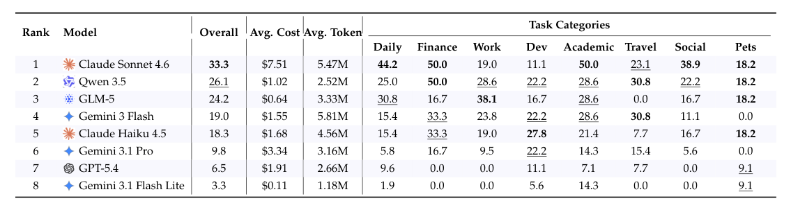
Table 3: Main results on CLAWBENCH. Success rate (%) of 8 models on CLAWBENCH, reported overall and for each of the 8 high-level task categories. Avg. Cost denotes the average API cost per task, and Avg. Token denotes the average token consumption per task. Bold marks the best result; underline marks the second best.
3.2Main Results3.2 主要结果
Overall success rate. Table 3 shows that CLAWBENCH remains far from saturated. Claude Sonnet 4.6 is the strongest model, but its overall success rate is only 33.3%; the next best model, Qwen 3.5, reaches 26.1%, followed by GLM-5 at 24.2%. The large drop from frontier- agent performance on established web-agent benchmarks to these live, write-heavy tasks suggests that everyday online task completion remains a substantially harder setting than controlled browser evaluation.
总体成功率。表 3 表明 CLAWBENCH 远未饱和：Claude Sonnet 4.6 是最强模型，但总体成功率仅 33.3%；次优的 Qwen 3.5 为 26.1%，其后是 GLM-5 的 24.2%。前沿智能体在既有网页智能体基准上的成绩，移植到这些实时重写入任务后大幅下滑——完成日常线上任务，仍是远难于受控浏览器评估的场景。
Task-level saturation. The low aggregate scores are not driven by a small set of outlier tasks. Across the 8-model panel, 68 of 153 tasks (44.4%) are solved by no model, only one task is solved by 7 of 8 models, and no task is solved by all eight. This shows that CLAWBENCH is far from saturated at the task level, not only at the leaderboard level.
任务级饱和。总体分数偏低，并非源于一小撮离群任务：在 8 模型面板中，153 个任务有 68 个（44.4%）无任何模型解决，仅一个任务被 8 个模型中的 7 个解决，且没有任何任务被全部八个模型解决。可见 CLAWBENCH 不仅在排行榜层面远未饱和，在任务层面同样如此。
Model ranking and domain variation. The leaderboard is not explained by a single global capability. Sonnet 4.6 leads the overall leaderboard and is strongest on Daily, Academic, and Social tasks, while tying Qwen 3.5 on Finance and Pets. Qwen 3.5 is the second-best overall model and ties Gemini 3 Flash on Travel, GLM-5 is strongest on Work, and Claude Haiku 4.5 is strongest on Dev. This uneven profile indicates that current agents do not yet transfer uniformly across everyday domains: the same model that handles shopping or social workflows may still struggle with job applications, travel booking, or developer workflows. Appendix B.2 provides the fine-grained category table and rank-by-category visualization.
模型排名与领域差异。榜单并非由单一的全局能力所能解释：Sonnet 4.6 领跑总榜，在 Daily、Academic 与 Social 任务上最强，在 Finance 与 Pets 上与 Qwen 3.5 打平；总体第二的 Qwen 3.5 在 Travel 上与 Gemini 3 Flash 并列；GLM-5 于 Work 最强，Claude Haiku 4.5 于 Dev 最强。这种不均衡的能力分布说明，当前智能体尚无法在日常生活领域间均匀迁移——能处理购物或社交工作流的模型，换到求职申请、旅行预订或开发者工作流仍可能受挫。附录 B.2 给出细粒度类别表及按类别排名的可视化。
Cost-performance tradeoff. GLM-5 is the most cost-efficient on CLAWBENCH at $0.64 per task and 24.2% SR; Claude Sonnet 4.6 holds the accuracy ceiling at 33.3% SR but pays 12× that cost for 9.1 pp more SR (Table 3, Figure 5). Token usage tells a similar story but with a different winner: Qwen 3.5 reaches 26.1% SR on just 2.52M tokens per task, the lowest per-SR-point token budget in the panel, while Gemini 3 Flash spends 5.81M tokens for only 19.0% SR. Per-trajectory tool-call counts (Figure 5 panel c) further differentiate the panel: Qwen 3.5 is the most action-efficient capable model at 42 average tool calls per task for 26.1% SR, while GPT-5.4 averages only 13 tool calls per task at 6.5% SR, reflecting early termination rather than efficient task completion. Beyond Qwen 3.5 and the two early-terminating low-SR models, the other higher-interaction agents cluster around 52 to 86 average tool calls per task. This non-monotonic frontier shows that higher spending alone does not reliably translate into better completion on live, write-heavy web tasks. Taken together, the tradeoff suggests two clear operating points: GLM-5 or Qwen 3.5 for budget-constrained evaluation, and Sonnet 4.6 when maximizing accuracy is the primary goal.
成本-性能权衡。在 CLAWBENCH 上，GLM-5 的性价比最高：每任务 $0.64、SR 24.2%；Claude Sonnet 4.6 守住精度上限（SR 33.3%），却付出 12 倍成本，仅多换来 9.1 个百分点的 SR（表 3、图 5）。令牌用量呈现类似格局，但赢家不同：Qwen 3.5 以每任务仅 2.52M 令牌取得 26.1% SR，是面板中每单位 SR 令牌开销最低者；Gemini 3 Flash 耗费 5.81M 令牌却仅得 19.0% SR。每轨迹工具调用次数（图 5 面板 c）进一步拉开差距：Qwen 3.5 是动作效率最高的可用模型，平均每任务 42 次工具调用换取 26.1% SR；GPT-5.4 平均每任务仅 13 次调用、SR 6.5%，反映的是过早终止而非高效完成。除 Qwen 3.5 与两个早终止低 SR 模型外，其余高交互智能体集中在平均每任务 52 至 86 次调用。这条非单调的前沿表明，单纯堆高开销并不能可靠地转化为实时重写入网页任务上更好的完成率。综合而言，该权衡给出两个明确的选型点：预算受限的评估可选 GLM-5 或 Qwen 3.5；以精度最大化为首要目标则选 Sonnet 4.6。
3.3Trace-Level Diagnosis3.3 轨迹级诊断
The headline success rates show that current agents struggle, but the trace corpus explains what kind of struggle it is. This subsection keeps the diagnosis focused on four non- overlapping signals: how much interaction failing trajectories consume, what kinds of
总体成功率表明当前智能体表现不佳，而轨迹语料库则揭示了这种不佳究竟源于何处。本小节将诊断聚焦于四个互不重叠的信号：失败轨迹消耗了多少交互、其中包含哪类
7
7
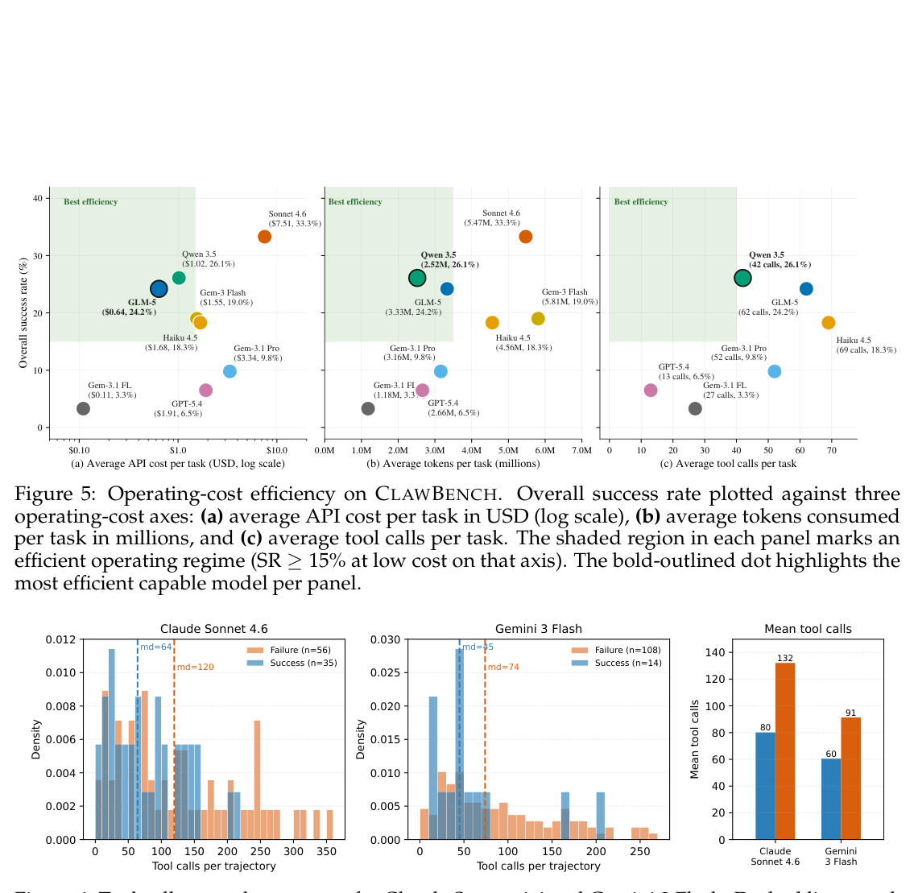
Figure 5: Operating-cost efficiency on CLAWBENCH. Overall success rate plotted against three operating-cost axes: (a) average API cost per task in USD (log scale), (b) average tokens consumed per task in millions, and (c) average tool calls per task. The shaded region in each panel marks an efficient operating regime (SR ≥15% at low cost on that axis). The bold-outlined dot highlights the most efficient capable model per panel.
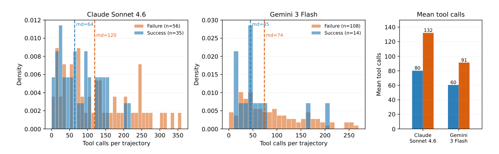
Figure 6: Tool-call counts by outcome for Claude Sonnet 4.6 and Gemini 3 Flash. Dashed lines mark medians; failed trajectories make more calls and have longer tails, indicating unproductive rather than insufficient exploration.
browser actions those trajectories contain, how far agents progress through write-heavy workflows, and how agent interaction dynamics differ from human behavior. Additional pass/fail distribution plots, stop-reason diagnostics, and failure-case evidence are reported in Appendix B.
浏览器动作、智能体在重写入工作流中推进到了多深，以及智能体的交互动态与人类行为有何差异。其余通过/失败分布图、停止原因诊断与失败案例证据见附录 B。
Failed trajectories often consume more browser interaction. We count browser tool calls from the agent message log, excluding passive page reloads that would inflate the raw action stream. Figure 6 compares a strong model, Claude Sonnet 4.6, with a mid-tier model, Gemini 3 Flash, on trajectories that actually started. For both models, failed trajectories use more tool calls than successful ones: Sonnet 4.6 has a median of 64 tool calls on successful runs and 120 on failed runs, while Gemini 3 Flash has a median of 45 on successful runs and 74 on failed runs. Failures also carry a heavy right tail, reaching 354 tool calls for Sonnet 4.6 and 263 for Gemini 3 Flash. This pattern rules out a simple “not enough exploration” explanation: many failures are unproductive retry loops on anti-bot walls, repeated re-snapshotting, or repeated attempts to reach a final submission state.
失败轨迹往往消耗更多浏览器交互。我们从智能体消息日志统计浏览器工具调用次数，并剔除会夸大原始动作流的被动页面重载。图 6 对比强模型 Claude Sonnet 4.6 与中档模型 Gemini 3 Flash 在实际启动轨迹上的表现：两个模型的失败轨迹调用的工具都多于成功轨迹——Sonnet 4.6 成功运行的中位数为 64 次、失败运行达 120 次；Gemini 3 Flash 成功运行为 45 次、失败运行 74 次。失败侧还存在沉重的右尾：Sonnet 4.6 最高达 354 次，Gemini 3 Flash 达 263 次。这一模式排除了「探索不足」这类简单解释：许多失败其实是反爬虫墙前的无效重试循环、反复重新截图，或反复冲击最终提交状态未果。
Tool-use composition and stage position reveal last-mile hesitation. Tool-call volume alone does not say whether agents are navigating, filling fields, or attempting the final state-changing action. Figure 7a therefore decomposes every toolCall in agent messages into click, type, scroll, navigate, wait, final, and other categories, grouped by model and outcome. Figure 7b complements this action-type view by assigning each of the 1,224 runs to its deepest observed workflow stage. The main pattern is not a large shift in ordinary click/type behavior: Sonnet 4.6 issues 25% / 15% click/type on passes and 20% / 16% on failures, while Gemini 3 Flash issues 30% / 28% on passes and 28% / 21% on
工具使用构成与所处阶段揭示了最后一英里的犹豫。仅凭工具调用量，无法判断智能体是在导航、填写字段，还是在尝试最终改变状态的动作。为此，图 7a 将智能体消息中的每个 toolCall 分解为 click、type、scroll、navigate、wait、final 与 other 七类，按模型和结果分组；图 7b 则从动作类型视角补充：把 1,224 次运行中的每一次归入其观测到的最深工作流阶段。主要模式并非普通 click/type 行为的大幅偏移：Sonnet 4.6 成功时 click/type 占 25% / 15%，失败时为 20% / 16%；Gemini 3 Flash 成功时为 30% / 28%，失败时为 28% / 21% 的
failures. Instead, failing runs combine higher interaction volume with a smaller terminal- commitment slice: the final click or type action is consistently less represented on failures
失败。相反，失败运行的共性是交互量更高、终端提交占比更小：最终的 click 或 type 动作在失败运行中的占比始终低于
8
8
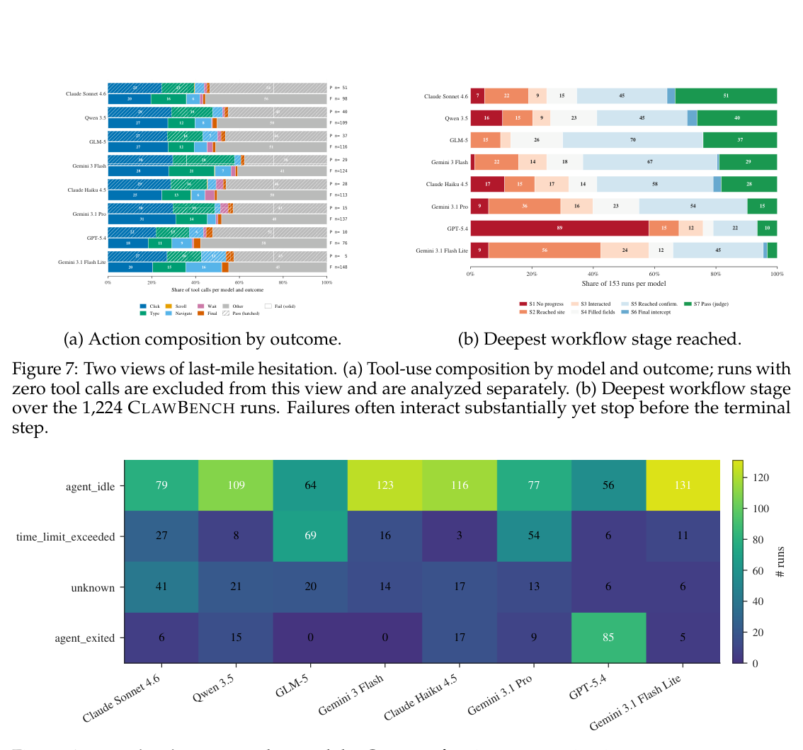
Figure 7: Two views of last-mile hesitation. (a) Tool-use composition by model and outcome; runs with zero tool calls are excluded from this view and are analyzed separately. (b) Deepest workflow stage over the 1,224 CLAWBENCH runs. Failures often interact substantially yet stop before the terminal step.
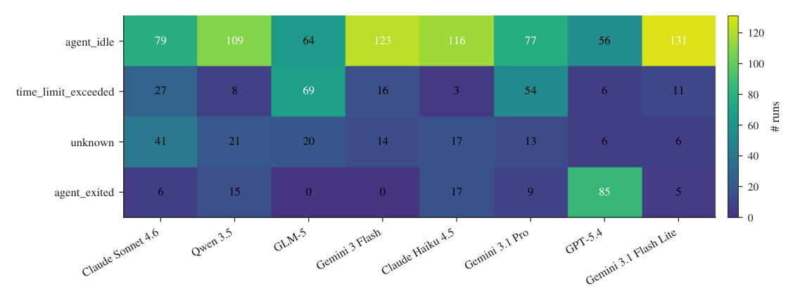
Figure 8: Termination reason by model. Counts of trajectory terminations across agent_idle, time_limit_exceeded, agent_exited, and unknown for the eight frontier agents.
than on passes. The stage funnel localizes the same effect procedurally: six of eight models concentrate many failures at S5, where the agent reaches the final confirmation step but does not commit the state-changing request. Together, these views connect the effort signal above to the write-heavy nature of CLAWBENCH: agents often interact with the page but hesitate before the final Submit, Confirm, or Place-Order step.
成功运行。阶段漏斗从流程角度定位了同一效应：八个模型中有六个的大量失败集中在 S5——智能体已到达最终确认步骤，却未提交改变状态的请求。这些视角共同把上述「投入信号」与 CLAWBENCH 的重写入性质联系起来：智能体频繁与页面交互，却在最后的 Submit、Confirm 或 Place-Order 步骤前踌躇不前。
Failure regimes differ across agents. The same low success rate can reflect different opera- tional failures. Gemini 3.1 Flash Lite terminates with agent_idle on 131 of 153 runs, GLM-5 reaches the 30-minute wall-clock limit on 69 runs, and GPT-5.4 exits through agent_exited on 85 runs (Figure 8). Thus progress on live-web agents should be measured along separate axes: preventing premature exit, sustaining action through live-site friction, and committing safely at the final step.
失败机制因智能体而异。同样低的成功率，背后可能是截然不同的操作性失败：Gemini 3.1 Flash Lite 在 153 次运行中有 131 次以 agent_idle 终止；GLM-5 有 69 次触及 30 分钟墙钟时限；GPT-5.4 有 85 次经 agent_exited 退出（图 8）。因此，衡量实时网页智能体的进步应分轴而行：防止过早退出、在真实网站摩擦下持续行动、在最后一步安全提交。
4Conclusion4 结论
We introduce CLAWBENCH, a benchmark of 153 real-world everyday web tasks spanning 144 live platforms across 8 high-level category groups. By evaluating agents on live production websites and focusing on write-heavy, state-changing workflows, CLAWBENCH provides a more realistic testbed than prior benchmarks built on static pages or sandboxes. Our framework combines final-request interception, 5-layer trajectory recording, and Agent- as-Judge evaluation. Experiments on 8 models show that strong performance on existing web-agent benchmarks does not transfer to CLAWBENCH, highlighting the gap between controlled benchmark success and real-world web competence. We release the benchmark, evaluation toolkit, infrastructure, and agent trajectories to support future research on
我们提出 CLAWBENCH：一个包含 153 个真实世界日常网页任务的基准，覆盖 8 个高层类别组下的 144 个实时平台。CLAWBENCH 在实时生产网站上评估智能体，聚焦重写入、改变状态的工作流，因而比基于静态页面或沙盒的既有基准更贴近现实。该框架融合最终请求拦截、五层轨迹记录与 Agent-as-Judge 评估。8 个模型的实验表明，在既有网页智能体基准上的强劲表现无法迁移至 CLAWBENCH——受控基准的成功与真实世界的网页能力之间仍存在明显鸿沟。我们开源基准、评估工具包、基础设施与智能体轨迹，以支持未来对
9
9
realistic web-agent evaluation. Ultimately, we hope CLAWBENCH helps guide the next generation of web agents toward reliably and safely completing the everyday online tasks people most want to delegate, turning today’s promising demonstrations into dependable assistance in daily life.
真实网页智能体评估的研究。我们期望 CLAWBENCH 能引导下一代网页智能体可靠且安全地完成人们最想委托的日常线上任务，让今天前景可期的演示，成长为日常生活中真正可依赖的协助。
References参考文献
Anthropic. Claude haiku 4.5. https://www.anthropic.com/news/claude-haiku-4-5, 2025.
Anthropic. Claude haiku 4.5. https://www.anthropic.com/news/claude-haiku-4-5, 2025.
Anthropic. Claude sonnet 4.6. https://www.anthropic.com/news/claude-sonnet-4-6, 2026.
Anthropic. Claude sonnet 4.6. https://www.anthropic.com/news/claude-sonnet-4-6, 2026.
Songcheng Cai, Zhiheng Lyu, Yuansheng Ni, Xiangchao Chen, Baichuan Zhou, Shenzhe Zhu,
Songcheng Cai, Zhiheng Lyu, Yuansheng Ni, Xiangchao Chen, Baichuan Zhou, Shenzhe Zhu,
Yi Lu, Haozhe Wang, Chi Ruan, Benjamin Schneider, et al. Swe-qa-pro: A representative benchmark and scalable training recipe for repository-level code understanding. arXiv preprint arXiv:2603.16124, 2026.
Yi Lu, Haozhe Wang, Chi Ruan, Benjamin Schneider, et al. Swe-qa-pro: A representative benchmark and scalable training recipe for repository-level code understanding. arXiv preprint arXiv:2603.16124, 2026.
Diego Caples, Andis Draguns, Nikil Ravi, Pranav Putta, Naman Garg, Prannay Hebbar,
Diego Caples, Andis Draguns, Nikil Ravi, Pranav Putta, Naman Garg, Prannay Hebbar,
Youngchul Joo, Jindong Gu, Charles London, Christian Schroeder de Witt, et al. Real: Benchmarking autonomous agents on deterministic simulations of real websites. Advances in Neural Information Processing Systems, 38, 2026.
Youngchul Joo, Jindong Gu, Charles London, Christian Schroeder de Witt, et al. Real: Benchmarking autonomous agents on deterministic simulations of real websites. Advances in Neural Information Processing Systems, 38, 2026.
Zijian Chen, Xueguang Ma, Shengyao Zhuang, Ping Nie, Kai Zou, Andrew Liu, Joshua
Zijian Chen, Xueguang Ma, Shengyao Zhuang, Ping Nie, Kai Zou, Andrew Liu, Joshua
Green, Kshama Patel, Ruoxi Meng, Mingyi Su, et al. Browsecomp-plus: A more fair and transparent evaluation benchmark of deep-research agent. arXiv preprint arXiv:2508.06600, 2025.
Green, Kshama Patel, Ruoxi Meng, Mingyi Su, et al. Browsecomp-plus: A more fair and transparent evaluation benchmark of deep-research agent. arXiv preprint arXiv:2508.06600, 2025.
Xiang Deng, Yu Gu, Boyuan Zheng, Shijie Chen, Sam Stevens, Boshi Wang, Huan Sun, and
Xiang Deng, Yu Gu, Boyuan Zheng, Shijie Chen, Sam Stevens, Boshi Wang, Huan Sun, and
Yu Su. Mind2web: Towards a generalist agent for the web. Advances in Neural Information Processing Systems, 36:28091–28114, 2023.
Yu Su. Mind2web: Towards a generalist agent for the web. Advances in Neural Information Processing Systems, 36:28091–28114, 2023.
Devin Ersoy, Brandon Lee, Ananth Shreekumar, Arjun Arunasalam, Muhammad Ibrahim,
Devin Ersoy, Brandon Lee, Ananth Shreekumar, Arjun Arunasalam, Muhammad Ibrahim,
Antonio Bianchi, and Z Berkay Celik. Investigating the impact of dark patterns on llm-based web agents. arXiv preprint arXiv:2510.18113, 2025.
Antonio Bianchi, and Z Berkay Celik. Investigating the impact of dark patterns on llm-based web agents. arXiv preprint arXiv:2510.18113, 2025.
Google DeepMind. Gemini 3 flash. https://deepmind.google/models/gemini/flash/, 2025.
Google DeepMind. Gemini 3 flash. https://deepmind.google/models/gemini/flash/, 2025.
Google DeepMind. Gemini 3.1 flash-lite. https://deepmind.google/models/gemini/ flash-lite/, 2026a.
Google DeepMind. Gemini 3.1 flash-lite. https://deepmind.google/models/gemini/ flash-lite/, 2026a.
Google DeepMind. Gemini 3.1 pro. https://deepmind.google/models/gemini/pro/, 2026b.
Google DeepMind. Gemini 3.1 pro. https://deepmind.google/models/gemini/pro/, 2026b.
Izzeddin Gur, Hiroki Furuta, Austin Huang, Mustafa Safdari, Yutaka Matsuo, Douglas Eck,
Izzeddin Gur, Hiroki Furuta, Austin Huang, Mustafa Safdari, Yutaka Matsuo, Douglas Eck,
and Aleksandra Faust. A real-world webagent with planning, long context understanding, and program synthesis. In International Conference on Learning Representations, volume 2024, pp. 52690–52717, 2024.
and Aleksandra Faust. A real-world webagent with planning, long context understanding, and program synthesis. In International Conference on Learning Representations, volume 2024, pp. 52690–52717, 2024.
Hongliang He, Wenlin Yao, Kaixin Ma, Wenhao Yu, Yong Dai, Hongming Zhang, Zhenzhong
Hongliang He, Wenlin Yao, Kaixin Ma, Wenhao Yu, Yong Dai, Hongming Zhang, Zhenzhong
Lan, and Dong Yu. Webvoyager: Building an end-to-end web agent with large multimodal models. In Proceedings of the 62nd Annual Meeting of the Association for Computational Linguistics (Volume 1: Long Papers), pp. 6864–6890, 2024.
Lan, and Dong Yu. Webvoyager: Building an end-to-end web agent with large multimodal models. In Proceedings of the 62nd Annual Meeting of the Association for Computational Linguistics (Volume 1: Long Papers), pp. 6864–6890, 2024.
Jing Yu Koh, Robert Lo, Lawrence Jang, Vikram Duvvur, Ming Lim, Po-Yu Huang, Graham
Jing Yu Koh, Robert Lo, Lawrence Jang, Vikram Duvvur, Ming Lim, Po-Yu Huang, Graham
Neubig, Shuyan Zhou, Russ Salakhutdinov, and Daniel Fried. Visualwebarena: Evalu- ating multimodal agents on realistic visual web tasks. In Proceedings of the 62nd Annual Meeting of the Association for Computational Linguistics (Volume 1: Long Papers), pp. 881–905, 2024.
Neubig, Shuyan Zhou, Russ Salakhutdinov, and Daniel Fried. Visualwebarena: Evalu- ating multimodal agents on realistic visual web tasks. In Proceedings of the 62nd Annual Meeting of the Association for Computational Linguistics (Volume 1: Long Papers), pp. 881–905, 2024.
Jiarong Liang, Zhiheng Lyu, Zijie Liu, Xiangchao Chen, Ping Nie, Kai Zou, and Wenhu
Jiarong Liang, Zhiheng Lyu, Zijie Liu, Xiangchao Chen, Ping Nie, Kai Zou, and Wenhu
Chen. Swe-next: Scalable real-world software engineering tasks for agents. arXiv preprint arXiv:2603.20691, 2026.
Chen. Swe-next: Scalable real-world software engineering tasks for agents. arXiv preprint arXiv:2603.20691, 2026.
10
10
Zefang Liu and Yinzhu Quan. Econwebarena: Benchmarking autonomous agents on
Zefang Liu and Yinzhu Quan. Econwebarena: Benchmarking autonomous agents on
economic tasks in realistic web environments. arXiv preprint arXiv:2506.08136, 2025.
economic tasks in realistic web environments. arXiv preprint arXiv:2506.08136, 2025.
Reiichiro Nakano, Jacob Hilton, Suchir Balaji, Jeff Wu, Long Ouyang, Christina Kim, Christo-
Reiichiro Nakano, Jacob Hilton, Suchir Balaji, Jeff Wu, Long Ouyang, Christina Kim, Christo-
pher Hesse, Shantanu Jain, Vineet Kosaraju, William Saunders, et al. Webgpt: Browser- assisted question-answering with human feedback. arXiv preprint arXiv:2112.09332, 2021.
pher Hesse, Shantanu Jain, Vineet Kosaraju, William Saunders, et al. Webgpt: Browser- assisted question-answering with human feedback. arXiv preprint arXiv:2112.09332, 2021.
OpenAI. Gpt-5.4. https://platform.openai.com/docs/models/gpt-5.4, 2026.
OpenAI. Gpt-5.4. https://platform.openai.com/docs/models/gpt-5.4, 2026.
Yichen Pan, Dehan Kong, Sida Zhou, Cheng Cui, Yifei Leng, Bing Jiang, Hangyu Liu, Yanyi
Yichen Pan, Dehan Kong, Sida Zhou, Cheng Cui, Yifei Leng, Bing Jiang, Hangyu Liu, Yanyi
Shang, Shuyan Zhou, Tongshuang Wu, et al. Webcanvas: Benchmarking web agents in online environments. arXiv preprint arXiv:2406.12373, 2024.
Shang, Shuyan Zhou, Tongshuang Wu, et al. Webcanvas: Benchmarking web agents in online environments. arXiv preprint arXiv:2406.12373, 2024.
Tianlin Shi, Andrej Karpathy, Linxi Fan, Jonathan Hernandez, and Percy Liang. World of bits:
Tianlin Shi, Andrej Karpathy, Linxi Fan, Jonathan Hernandez, and Percy Liang. World of bits:
An open-domain platform for web-based agents. In Proceedings of the 34th International Conference on Machine Learning, pp. 3135–3144. PMLR, 2017.
An open-domain platform for web-based agents. In Proceedings of the 34th International Conference on Machine Learning, pp. 3135–3144. PMLR, 2017.
Qwen Team. Qwen3.5: Accelerating productivity with native multimodal agents, 2026.
Qwen Team. Qwen3.5: Accelerating productivity with native multimodal agents, 2026.
Zhenting Wang, Qi Chang, Hemani Patel, Shashank Biju, Cheng-En Wu, Quan Liu, Aolin
Zhenting Wang, Qi Chang, Hemani Patel, Shashank Biju, Cheng-En Wu, Quan Liu, Aolin
Ding, Alireza Rezazadeh, Ankit Shah, Yujia Bao, et al. Mcp-bench: Benchmarking tool-using llm agents with complex real-world tasks via mcp servers. arXiv preprint arXiv:2508.20453, 2025.
Ding, Alireza Rezazadeh, Ankit Shah, Yujia Bao, et al. Mcp-bench: Benchmarking tool-using llm agents with complex real-world tasks via mcp servers. arXiv preprint arXiv:2508.20453, 2025.
Tianbao Xie, Danyang Zhang, Jixuan Chen, Xiaochuan Li, Siheng Zhao, Ruisheng Cao,
Tianbao Xie, Danyang Zhang, Jixuan Chen, Xiaochuan Li, Siheng Zhao, Ruisheng Cao,
Toh J Hua, Zhoujun Cheng, Dongchan Shin, Fangyu Lei, et al. Osworld: Benchmarking multimodal agents for open-ended tasks in real computer environments. Advances in Neural Information Processing Systems, 37:52040–52094, 2024.
Toh J Hua, Zhoujun Cheng, Dongchan Shin, Fangyu Lei, et al. Osworld: Benchmarking multimodal agents for open-ended tasks in real computer environments. Advances in Neural Information Processing Systems, 37:52040–52094, 2024.
Frank Fangzheng Xu, Yufan Song, Boxuan Li, Yuxuan Tang, Kritanjali Jain, Mengxue
Frank Fangzheng Xu, Yufan Song, Boxuan Li, Yuxuan Tang, Kritanjali Jain, Mengxue
Bao, Zora Wang, Xuhui Zhou, Zhitong Guo, Murong Cao, et al. Theagentcompany: benchmarking llm agents on consequential real world tasks. Advances in Neural Information Processing Systems, 38, 2026.
Bao, Zora Wang, Xuhui Zhou, Zhitong Guo, Murong Cao, et al. Theagentcompany: benchmarking llm agents on consequential real world tasks. Advances in Neural Information Processing Systems, 38, 2026.
Wendong Xu, Jing Xiong, Chenyang Zhao, Qiujiang Chen, Haoran Wang, Hui Shen, Zhong-
Wendong Xu, Jing Xiong, Chenyang Zhao, Qiujiang Chen, Haoran Wang, Hui Shen, Zhong-
wei Wan, Jianbo Dai, Taiqiang Wu, He Xiao, et al. Swingarena: Competitive programming arena for long-context github issue solving. arXiv preprint arXiv:2505.23932, 2025.
wei Wan, Jianbo Dai, Taiqiang Wu, He Xiao, et al. Swingarena: Competitive programming arena for long-context github issue solving. arXiv preprint arXiv:2505.23932, 2025.
Tianci Xue, Weijian Qi, Tianneng Shi, Chan Hee Song, Boyu Gou, Dawn Song, Huan Sun,
Tianci Xue, Weijian Qi, Tianneng Shi, Chan Hee Song, Boyu Gou, Dawn Song, Huan Sun,
and Yu Su. An illusion of progress? assessing the current state of web agents. arXiv preprint arXiv:2504.01382, 2025.
and Yu Su. An illusion of progress? assessing the current state of web agents. arXiv preprint arXiv:2504.01382, 2025.
Yang Yao, Yixu Wang, Yuxuan Zhang, Yi Lu, Tianle Gu, Lingyu Li, Dingyi Zhao, Keming
Yang Yao, Yixu Wang, Yuxuan Zhang, Yi Lu, Tianle Gu, Lingyu Li, Dingyi Zhao, Keming
Wu, Haozhe Wang, Ping Nie, Yan Teng, and Yingchun Wang. Dr. bench: A multidi- mensional evaluation for deep research agents, from answers to reports. arXiv preprint arXiv:2510.02190, 2025.
Wu, Haozhe Wang, Ping Nie, Yan Teng, and Yingchun Wang. Dr. bench: A multidi- mensional evaluation for deep research agents, from answers to reports. arXiv preprint arXiv:2510.02190, 2025.
Bowen Ye, Rang Li, Qibin Yang, Yuanxin Liu, Linli Yao, Hanglong Lv, Zhihui Xie, Chenxin
Bowen Ye, Rang Li, Qibin Yang, Yuanxin Liu, Linli Yao, Hanglong Lv, Zhihui Xie, Chenxin
An, Lei Li, Lingpeng Kong, et al. Claw-eval: Towards trustworthy evaluation of au- tonomous agents. arXiv preprint arXiv:2604.06132, 2026.
An, Lei Li, Lingpeng Kong, et al. Claw-eval: Towards trustworthy evaluation of au- tonomous agents. arXiv preprint arXiv:2604.06132, 2026.
Ori Yoran, Samuel Joseph Amouyal, Chaitanya Malaviya, Ben Bogin, Ofir Press, and
Ori Yoran, Samuel Joseph Amouyal, Chaitanya Malaviya, Ben Bogin, Ofir Press, and
Jonathan Berant. Assistantbench: Can web agents solve realistic and time-consuming tasks? In Proceedings of the 2024 Conference on Empirical Methods in Natural Language Processing, pp. 8938–8968, 2024.
Jonathan Berant. Assistantbench: Can web agents solve realistic and time-consuming tasks? In Proceedings of the 2024 Conference on Empirical Methods in Natural Language Processing, pp. 8938–8968, 2024.
Tao Yu, Zhengbo Zhang, Zhiheng Lyu, Junhao Gong, Hongzhu Yi, Xinming Wang, Yuxuan
Tao Yu, Zhengbo Zhang, Zhiheng Lyu, Junhao Gong, Hongzhu Yi, Xinming Wang, Yuxuan
Zhou, Jiabing Yang, Ping Nie, Yan Huang, et al. Browseragent: Building web agents with human-inspired web browsing actions. arXiv preprint arXiv:2510.10666, 2025.
Zhou, Jiabing Yang, Ping Nie, Yan Huang, et al. Browseragent: Building web agents with human-inspired web browsing actions. arXiv preprint arXiv:2510.10666, 2025.
Aohan Zeng, Xin Lv, Zhenyu Hou, Zhengxiao Du, Qinkai Zheng, Bin Chen, Da Yin, Chendi
Aohan Zeng, Xin Lv, Zhenyu Hou, Zhengxiao Du, Qinkai Zheng, Bin Chen, Da Yin, Chendi
Ge, Chenghua Huang, Chengxing Xie, et al. Glm-5: from vibe coding to agentic engineer- ing. arXiv preprint arXiv:2602.15763, 2026.
Ge, Chenghua Huang, Chengxing Xie, et al. Glm-5: from vibe coding to agentic engineer- ing. arXiv preprint arXiv:2602.15763, 2026.
11
11
Boyuan Zheng, Boyu Gou, Jihyung Kil, Huan Sun, and Yu Su. Gpt-4v (ision) is a generalist
Boyuan Zheng, Boyu Gou, Jihyung Kil, Huan Sun, and Yu Su. Gpt-4v (ision) is a generalist
web agent, if grounded. arXiv preprint arXiv:2401.01614, 2024.
web agent, if grounded. arXiv preprint arXiv:2401.01614, 2024.
Shuyan Zhou, Frank F Xu, Hao Zhu, Xuhui Zhou, Robert Lo, Abishek Sridhar, Xianyi Cheng,
Shuyan Zhou, Frank F Xu, Hao Zhu, Xuhui Zhou, Robert Lo, Abishek Sridhar, Xianyi Cheng,
Tianyue Ou, Yonatan Bisk, Daniel Fried, et al. Webarena: A realistic web environment for building autonomous agents. In International Conference on Learning Representations, volume 2024, pp. 15585–15606, 2024.
Tianyue Ou, Yonatan Bisk, Daniel Fried, et al. Webarena: A realistic web environment for building autonomous agents. In International Conference on Learning Representations, volume 2024, pp. 15585–15606, 2024.
12
12
Limitations局限
CLAWBENCH evaluates agents on live production websites, trading rerun determinism for ecological validity. Sites change layouts, run A/B tests, vary by region or account state, and deploy anti-automation defenses, so exact reproduction is not guaranteed; we mitigate this by recording human reference trajectories, intercepted terminal payloads, screenshots, browser actions, HTTP traffic, and agent messages, so that individual outcomes remain auditable even when site state drifts. Each run is correspondingly more expensive than static-trace or sandbox benchmarks, it requires a live session, repeated model calls, network instrumentation, and trace-based judging, which limits the number of repeated trials, prompt variants, and ablations we report under a fixed budget. Results are also conditioned on a shared OpenClaw harness, prompt, browser configuration, and action interface: the scores measure each model within this agent stack rather than the language model in isolation, and a different scaffold may yield different outcomes on the same tasks.
CLAWBENCH 在实时生产网站上评估智能体，以牺牲重运行确定性换取生态有效性：网站会改版、运行 A/B 测试、因地区或账户状态而异，且部署反自动化防御，精确复现并无保证。为此，我们记录人类参考轨迹、被拦截的终结载荷、截图、浏览器动作、HTTP 流量与智能体消息——即便网站状态漂移，单次结果仍可审计。相应地，每次运行的成本高于静态轨迹或沙盒基准：需要实时会话、反复的模型调用、网络插桩与基于轨迹的评判，这限制了我们在固定预算下能报告的重复试验、提示变体与消融数量。此外，结果以共享的 OpenClaw harness、提示、浏览器配置与动作接口为前提：分数衡量的是模型在该智能体栈内的表现，而非孤立语言模型的能力；换用其他支架，同一任务上可能得到不同结果。
Our primary metric is a binary pass/fail verdict from an Agent-as-Judge protocol grounded in human references and multi-layer traces. Binary scoring is conservative for consequential write-heavy tasks, where partial progress rarely suffices if the final submission is missing, malformed, or sent to the wrong endpoint, but it abstracts away intermediate behavior such as reaching the target site, filling most fields correctly, or stopping at a verification gate; the released traces and structured justifications support complementary analyses of these behaviors. Because one evaluated model (Claude Sonnet 4.6) shares a model family with the judge, we audit per-model human agreement in Appendix B.1; Sonnet 4.6 reaches 93.46% agreement and GPT-5.4 reaches 84.97%, and an expanded four-model audit covers two additional models. The suite is also broad but not exhaustive: 153 tasks across 144 platforms emphasize cross-site generalization over dense per-domain coverage, and underrepresent mobile-only, non-English, and accessibility-dependent workflows, which future versions can extend under the same task-card, interception, and trace-based protocol.
我们的主要指标是 Agent-as-Judge 协议给出的二元通过/失败判定，其依据是人类参考与多层轨迹。对后果实际的重写入任务而言，二元评分是保守的——最终提交一旦缺失、畸形或发往错误端点，部分进展通常无济于事——但它也略去了中间行为，如是否抵达目标网站、是否正确填写大多数字段、是否停在验证门槛；已发布的轨迹与结构化理由可支持对这些行为的补充分析。由于被评估模型 Claude Sonnet 4.6 与裁判同属一个模型家族，我们在附录 B.1 中逐模型审计与人类判定的一致性：Sonnet 4.6 一致率 93.46%，GPT-5.4 为 84.97%，扩展的四模型审计另覆盖两个模型。该套件覆盖广泛但并不完备：153 个任务、144 个平台，强调跨站泛化而非密集的单领域覆盖，对纯移动端、非英语及依赖无障碍特性的工作流覆盖不足；未来版本可在同一套任务卡、拦截与轨迹化协议下继续扩展。
ARelated WorkA 相关工作
Web Agent Benchmarks. Early web agent benchmarks such as MiniWoB (Shi et al., 2017) evaluated agents on simplified, synthetic web interfaces with short action sequences. We- bArena (Zhou et al., 2024) introduced self-hosted, realistic web environments with 812 tasks across 5 domains, using URL and element matching for evaluation. VisualWebArena (Koh et al., 2024) extended this to visually grounded tasks on 3 self-hosted sites. Mind2Web (Deng et al., 2023) scaled to 2,350 tasks on 137 real-world domains but evaluated action sequences rather than end-to-end task completion. OSWorld (Xie et al., 2024) broadened the scope to full operating system tasks across 9 applications. More recently, REAL Bench (Caples et al., 2026) evaluated agents on live websites but relied on manual rating for scoring. CLAWBENCH differs from all prior work by (i) operating on 144 live platforms rather than self-hosted sandboxes, (ii) focusing on write-heavy, state-changing tasks, and (iii) providing traceable, comparative evaluation against human reference trajectories through Agent-as-Judge.
网页智能体基准。早期基准（如 MiniWoB (Shi et al., 2017)）在简化的合成网页界面上以短动作序列评估智能体。WebArena (Zhou et al., 2024) 引入自托管的真实网页环境，在 5 个域上提供 812 个任务，以 URL 与元素匹配评分；VisualWebArena (Koh et al., 2024) 将其扩展至 3 个自托管站点上的视觉接地任务；Mind2Web (Deng et al., 2023) 规模达 137 个真实域上的 2,350 个任务，但评估的是动作序列而非端到端任务完成；OSWorld (Xie et al., 2024) 则将范围扩展到 9 个应用中的完整操作系统任务。更近的 REAL Bench (Caples et al., 2026) 在真实网站上评估智能体，但依赖人工评分。CLAWBENCH 区别于上述所有工作之处在于：(i) 运行于 144 个实时平台而非自托管沙盒；(ii) 聚焦重写入、改变状态的任务；(iii) 经由 Agent-as-Judge 提供与人类参考轨迹对照、可追踪且可比较的评估。
LLM-Based Web Agents. The emergence of large language models has driven rapid progress in autonomous web agents. Systems such as WebGPT (Nakano et al., 2021), We- bAgent (Gur et al., 2024), and SeeAct (Zheng et al., 2024) demonstrated that LLMs can interpret web pages and execute multi-step browsing tasks when given appropriate obser- vation and action interfaces. Recent approaches combine visual perception (screenshots) with structured page representations (accessibility trees, HTML) to improve grounding accuracy. BrowserAgent (Yu et al., 2025) proposes a scalable training framework for web agents that operate directly on raw web pages via human-inspired browser actions such as scrolling, clicking, and typing. Agent frameworks including AgentGPT, AutoGPT, and OpenClaw provide standardized interfaces for deploying LLMs as web agents with tool use and action execution capabilities. CLAWBENCH is designed to evaluate any agent system that can control a Chromium browser, independent of the underlying model or framework.
基于 LLM 的网页智能体。大语言模型的出现推动了自主网页智能体的快速进展：WebGPT (Nakano et al., 2021)、WebAgent (Gur et al., 2024) 与 SeeAct (Zheng et al., 2024) 等系统证明，只要观察与动作接口得当，LLM 便能解读网页并执行多步浏览任务。近期方法将视觉感知（截图）与结构化页面表示（无障碍树、HTML）结合，以提升接地准确性。BrowserAgent (Yu et al., 2025) 提出可扩展的网页智能体训练框架，让智能体借滚动、点击、输入等仿人类浏览器动作直接操作原始网页。AgentGPT、AutoGPT、OpenClaw 等智能体框架则为部署具备工具使用与动作执行能力的 LLM 网页智能体提供了标准化接口。CLAWBENCH 可评估任何能控制 Chromium 浏览器的智能体系统，不依赖特定底层模型或框架。
13
13
Evaluation Methods for Agent Systems. Evaluating autonomous agents remains chal- lenging due to the diversity of possible action trajectories and the difficulty of defining success criteria. Prior work has used action sequence matching, URL-based success detec- tion, screenshot comparison, and human judgement. Action-level metrics suffer from the problem of multiple valid paths: an agent may complete a task correctly through a different sequence of actions than the reference trajectory. Screenshot-based methods require visual similarity thresholds that introduce non-determinism. Human evaluation, while flexible, is expensive and non-reproducible. CLAWBENCH sidesteps these issues by combining intercepted submission payloads with Agent-as-Judge, which performs explicit step-level alignment between the agent trajectory and a human reference trajectory, producing a binary verdict together with a structured justification grounded in the recorded evidence.
智能体系统的评估方法。可行的动作轨迹多种多样，成功标准又难以界定，自主智能体的评估因此始终是难题。先前工作先后采用过动作序列匹配、基于 URL 的成功检测、截图比对与人工评判：动作级指标受「多重有效路径」问题困扰——智能体可以用不同于参考轨迹的动作序列正确完成任务；截图方法依赖引入非确定性的视觉相似度阈值；人工评估虽灵活，却昂贵且不可复现。CLAWBENCH 以「被拦截的提交载荷 + Agent-as-Judge」绕开上述困境：后者在智能体轨迹与人类参考轨迹之间做显式的步骤级对齐，产出二元判定及基于记录证据的结构化理由。
Concurrent and Complementary Work. Several recent benchmarks address related but distinct aspects of web agent evaluation. TheAgentCompany (Xu et al., 2026) provides a self-hosted sandbox simulating a software company with 175 tasks and checkpoint-based partial credit; CLAWBENCH trades environmental control for real-world breadth across 144 live platforms. EconWebArena (Liu & Quan, 2025) is a live-web benchmark for economic research tasks featuring 360 read-only tasks with exact numeric matching and URL prove- nance; CLAWBENCH extends the live-web paradigm to write-heavy, state-changing tasks. MCP-Bench (Wang et al., 2025) evaluates LLM agents on tool invocation via the Model Context Protocol with strict schema validation; CLAWBENCH targets browser-based web interaction rather than structured API calls. SwingArena (Xu et al., 2025) introduces an innovative competitive programming arena that rigorously evaluates agents on long-context GitHub issue solving, advancing code-centric agent benchmarking; CLAWBENCH extends this evaluation spirit to everyday web interactions on live platforms beyond the software en- gineering domain. TrickyArena (Ersoy et al., 2025) studies dark pattern susceptibility in web agents across 4 controlled applications—an orthogonal safety concern that highlights the im- portance of evaluating on real websites where dark patterns occur naturally. AssistantBench (Yoran et al., 2024) defines 214 realistic open-web tasks with automated evaluation, focusing on information retrieval; CLAWBENCH complements this with write-heavy tasks. WebCan- vas (Pan et al., 2024) proposes key-node evaluation for 542 tasks on dynamic websites in a similar live-web setting but without HTTP payload verification. Taken together, these efforts illustrate a fundamental realism-vs-reproducibility trade-off: sandboxed benchmarks offer perfect reproducibility but may not reflect the complexity of real websites, while live-web benchmarks expose agents to authentic challenges at the cost of environmental variability. CLAWBENCH deliberately chooses realism and mitigates reproducibility concerns through human-grounded comparative evaluation and full multi-layer trajectory recording.
并行与互补工作。若干近期基准涉及网页智能体评估中相关但各不相同的侧面。TheAgentCompany (Xu et al., 2026) 提供模拟软件公司的自托管沙盒，含 175 个任务与基于检查点的部分给分；CLAWBENCH 则以环境控制换取 144 个实时平台上的真实广度。EconWebArena (Liu & Quan, 2025) 是面向经济研究任务的实时网页基准，含 360 个只读任务，采用精确数值匹配与 URL 溯源；CLAWBENCH 把实时网页范式推进到重写入、改变状态的任务。MCP-Bench (Wang et al., 2025) 以严格模式验证考察 LLM 智能体经 Model Context Protocol 调用工具的能力；CLAWBENCH 瞄准基于浏览器的网页交互，而非结构化 API 调用。SwingArena (Xu et al., 2025) 打造创新的竞技编程竞技场，在长上下文 GitHub issue 求解上严格评估智能体，推动以代码为中心的智能体基准；CLAWBENCH 则将这种评估精神延伸至软件工程之外——实时平台上的日常网页交互。TrickyArena (Ersoy et al., 2025) 研究网页智能体在 4 个受控应用中的暗模式易感性，属正交的安全议题，也印证了在暗模式自然存在的真实网站上评估的必要性。AssistantBench (Yoran et al., 2024) 定义 214 个现实的开放网页任务并配自动化评估，聚焦信息检索；CLAWBENCH 以重写入任务与之互补。WebCanvas (Pan et al., 2024) 在类似的实时网页设置下，为动态网站上的 542 个任务提出关键节点评估，但缺少 HTTP 载荷验证。整体来看，这些工作揭示了一个根本的真实性-可复现性权衡：沙盒基准可完美复现，却未必反映真实网站的复杂性；实时网页基准让智能体直面真实挑战，代价是环境多变。CLAWBENCH 有意选择真实性，并以扎根于人类的对照评估与完整的多层轨迹记录来缓解可复现性问题。
Deep Research and Code Agent Benchmarks. Beyond web browsing, recent work has advanced evaluation for deep research agents and software engineering tasks. Dr. Bench (Yao et al., 2025) introduces a multidimensional evaluation framework for deep research agents with 214 expert-curated tasks across 10 domains, targeting long-form report gen- eration. BrowseComp-Plus (Chen et al., 2025) provides a fair and transparent benchmark for deep research systems by employing a fixed, curated corpus with human-verified sup- porting documents, enabling disentangled analysis of retrieval and reasoning components. In the software engineering domain, SWE-Next (Liang et al., 2026) presents an execution- grounded framework for scalable SWE task and trajectory collection from real merged pull requests, while SWE-QA-Pro (Cai et al., 2026) proposes a representative benchmark for repository-level code understanding constructed from diverse, long-tail repositories. The recent Claw-Eval (Ye et al., 2026) introduces trajectory-aware grading and safety/robustness evaluation for autonomous agents—representing an evolution toward trustworthy evalua- tion paradigms beyond earlier-generation benchmarks. While these benchmarks focus on research synthesis or code-centric tasks, CLAWBENCH targets a complementary and equally important domain: the everyday web tasks that ordinary users need to accomplish regularly in their lives and work.
深度研究与代码智能体基准。网页浏览之外，近期工作也在推进深度研究智能体与软件工程任务的评估。Dr. Bench (Yao et al., 2025) 为深度研究智能体引入多维评估框架：214 个专家策展任务横跨 10 个领域，瞄准长篇报告生成。BrowseComp-Plus (Chen et al., 2025) 采用固定语料库并配备人工验证的支持文献，为深度研究系统提供公平透明的基准，支持检索与推理组件的解耦分析。软件工程方面，SWE-Next (Liang et al., 2026) 提出以执行为根基的框架，从真实合并的 pull request 中可扩展地收集 SWE 任务与轨迹；SWE-QA-Pro (Cai et al., 2026) 则从多样的长尾仓库构建面向仓库级代码理解的代表性基准。近期的 Claw-Eval (Ye et al., 2026) 为自主智能体引入轨迹感知评分与安全/鲁棒性评估——标志着向可信赖评估范式的演进。上述基准聚焦研究综合或代码中心任务；CLAWBENCH 瞄准的则是一个互补且同样重要的领域：普通用户在生活与工作中需定期完成的日常网页任务。
14
14
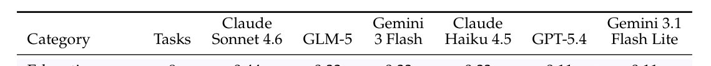
Table 4: Category-wise success rate across 15 task categories. Each value denotes the fraction of successfully completed tasks within the corresponding fine-grained category. Bold marks the best- performing model within each category.表 4 将表 3 的八个高层类别展开为基准分类法所用的 15 个细粒度类别。该表是细类别编码批次覆盖的六个模型的诊断性细分；正文排行榜仍是权威的 8 模型结果。
BExtended Trace-Level AnalysisB 扩展的轨迹级分析
The trace corpus extends the main-paper evaluation on the 1,224 main agent runs (8 mod- els × 153 tasks) with per-run behavioral signals: actions.jsonl, agent-messages.jsonl, interception.json, judge rationales, and browser-level event logs. The appendix uses these traces as supporting evidence for the main findings rather than as a second leaderboard. All headline success rates remain the 8-model Agent-as-Judge results in Table 3.
轨迹语料库在 1,224 次主智能体运行（8 个模型 × 153 个任务）的基础上扩展正文评估，提供每次运行的行为信号：actions.jsonl、agent-messages.jsonl、interception.json、裁判理由与浏览器级事件日志。附录将这些轨迹用作主要发现的支撑证据，而非第二份排行榜。所有主要成功率仍以表 3 的 8 模型 Agent-as-Judge 结果为准。
B.1 Safety and Evaluator AuditsB.1 安全与评估器审计
Safety-envelope audit. We audit the final-request interception envelope along three di- mensions. First, on the 153 human reference runs, the harness intercepted every annotated terminal request that the reference reached, with zero false-positive blocks on the recorded navigation traffic; this confirms the interceptor’s coverage at the trace level. Second, on the 8-model agent panel, 111 of 1,224 runs (9.1%, spanning 35 distinct tasks) triggered final- request interception. Third, among 177,687 non-terminal POST/PUT/PATCH/DELETE requests, 57.1% are third-party tracking and ad-tech, 41.5% are CDN challenges and GraphQL-as- POST persisted-query reads, 0.7% are login/auth, 0.2% are cart/session UI state, and 0.2% are form validation. The remaining 0.26% (464 requests) carry commit-suggestive tokens such as submit, checkout, or payment; manual inspection finds Shopify checkout propos- als, Stripe/Braintree Elements bootstraps, and quote previews, none of which commit an irreversible task side effect.
安全边界审计。我们从三个维度审计最终请求拦截边界。其一，在 153 次人类参考运行中，harness 拦截了参考流程触及的每一个被标注终结请求，且对记录的导航流量零误报阻断——证实了拦截器在轨迹层面的覆盖率。其二，在 8 模型智能体面板上，1,224 次运行中有 111 次（9.1%，涉及 35 个不同任务）触发最终请求拦截。其三，在 177,687 个非终结 POST/PUT/PATCH/DELETE 请求中，57.1% 为第三方跟踪与广告技术，41.5% 为 CDN 挑战及 GraphQL-as-POST 形式的持久化查询读取，0.7% 为登录/认证，0.2% 为购物车/会话 UI 状态，0.2% 为表单验证。其余 0.26%（464 个请求）携带 submit、checkout、payment 等提交暗示性 token；人工检查发现其为 Shopify 结账提案、Stripe/Braintree Elements 引导与报价预览，均不会提交不可逆的任务副作用。
B.2 Task-Level and Category BreakdownsB.2 任务级与类别细分
Category leadership. Figure 9 re-plots Table 3 as per-column ranks over overall success rate and the eight high-level categories. It shows why the main text treats the leaderboard
类别领先情况。图 9 将表 3 重绘为逐列排名，覆盖总体成功率与八个高层类别，由此可以看出正文为何将排行榜
15
15
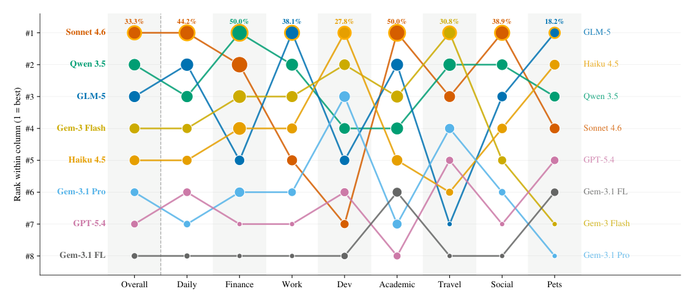
Figure 9: Category leadership rotates across the eight-model panel. Per-column rank of each model on overall success rate and the eight high-level task categories. Marker size scales with success rate; gold-outlined markers mark the rank-1 model in each column.
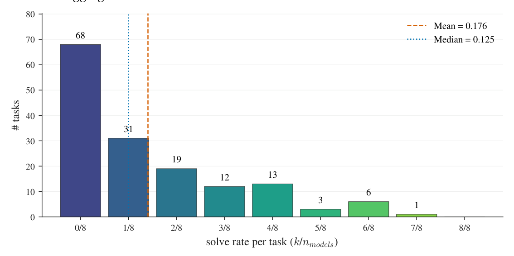
Figure 10: Per-task solve-rate distribution across the 8-model panel. For each of the 153 tasks, the histogram bins the fraction k/8 of evaluated models that pass the task.
and domain variation separately: Sonnet 4.6 leads four of eight categories, GLM-5 leads Work, Gemini 3 Flash and Qwen 3.5 share Travel, and Haiku 4.5 leads Dev.
与领域差异分别来看：Sonnet 4.6 在八个类别中领跑四个，GLM-5 领跑 Work，Gemini 3 Flash 与 Qwen 3.5 并列 Travel，Haiku 4.5 领跑 Dev。
Per-task solve-rate distribution. Figure 10 reports task-level saturation over the 8-model panel. The distribution is heavily left-loaded: 68 of 153 tasks (44.4%) are solved by no model, only one task is passed by seven of eight models, and no task is passed by all eight. The mean solve rate is 0.176 and the median is 0.125, which provides the task-level counterpart to the low aggregate success rates in Table 3.
单任务解决率分布。图 10 给出 8 模型面板上的任务级饱和度。分布明显左偏：153 个任务中有 68 个（44.4%）无任何模型解决，仅一个任务被八分之七的模型通过，且无任务被全部八个模型通过。平均解决率 0.176、中位数 0.125——与表 3 中偏低的总体成功率在任务层面互为印证。
B.3 Extended Effort DiagnosticsB.3 扩展的投入诊断
Pass/fail distributions. Figure 11 shows the distribution-level version of the effort table. It separates the two failure regimes that medians compress: early exits with almost no
通过/失败分布。图 11 给出投入表的分布级版本，区分了被中位数掩盖的两种失败机制：一是几乎没有
16
16
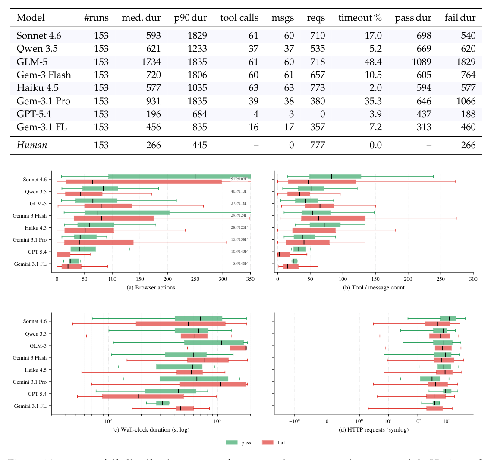
Table 5: Per-run behavioral signals on the 153-task set. Med./p90 dur. = median and 90th-percentile wall-clock duration (s). Tool calls/msgs/reqs = median count of browser tool calls, agent messages, and outbound HTTP requests. Timeout % = fraction of runs that hit the 30 min wall-clock without passing.表 5 报告 153 个任务上的墙钟时长、工具调用次数、消息数、请求数、超时率及通过/失败时长拆分。该表与正文图 6 互补：图是两个代表性模型的特写，表则把全部八个智能体放到同一行为尺度上比较。
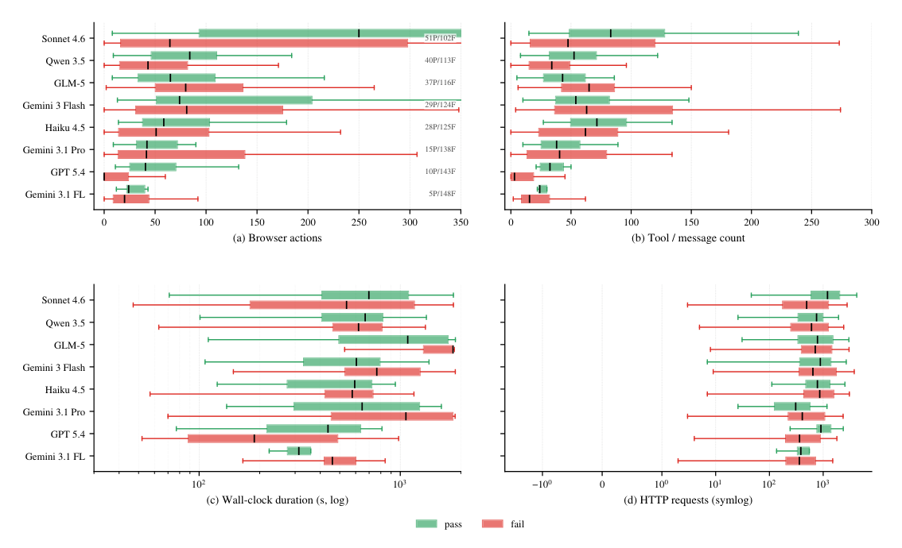
Figure 11: Pass-vs-fail distributions across four operating-cost metrics, per model. Horizontal boxplots split by outcome over browser actions, tool/message count, wall-clock duration, and HTTP request count.
actions or requests, and budget-burning trajectories whose duration mass piles up against the 1,800 s wall.
动作或请求的提前退出，二是时长堆积逼近 1,800 s 上限的烧预算轨迹。
B.4 Failure Case EvidenceB.4 失败案例证据
The aggregate diagnostics above are supported by manual inspection of representative traces. For the strongest model, we sampled 38 Sonnet 4.6 runs (26 failures and 12 passes), read the agent-message tail, the action log, and the LLM-judge ha_brief rationale where available, and tagged each run with one or more failure modes.
上述聚合诊断另有对代表性轨迹的人工检查佐证。针对最强模型，我们抽样 38 次 Sonnet 4.6 运行（26 次失败、12 次通过），审阅智能体消息尾部、动作日志及（如可用）LLM 裁判的 ha_brief 理由，并为每次运行标注一或多种失败模式。
Strong-model near misses. Seven of the sampled Sonnet 4.6 failures complete the multi- step flow up to the penultimate step and never issue the terminal Submit, Confirm, or Place- Order action. Near-misses include soko-glam (task 780), kanetix (task 750), globalgiving (task 778), masterclass (task 674), stumptown-coffee (task 695), autotrader (task 754), and ace-hardware (task 736). Other Sonnet traces show that obstacle recognition is not enough: on paypal (task 50), the agent correctly diagnoses a DataDome CAPTCHA, and on overleaf (task 242), it spends task budget writing a CAPTCHA-solver script rather than completing
强模型功亏一篑。抽样的 Sonnet 4.6 失败中有七次走完多步流程直至倒数第二步，却始终未发出终结的 Submit、Confirm 或 Place-Order 动作，涉及 soko-glam（任务 780）、kanetix（任务 750）、globalgiving（任务 778）、masterclass（任务 674）、stumptown-coffee（任务 695）、autotrader（任务 754）与 ace-hardware（任务 736）。其他 Sonnet 轨迹表明，识别障碍并不足以过关：在 paypal（任务 50）上，智能体正确诊断出 DataDome CAPTCHA；在 overleaf（任务 242）上，它却把任务预算耗在编写 CAPTCHA 求解脚本上，而非完成
17
17
Table 6: Sonnet 4.6 failure modes (n = 26 failures sampled across eight high-level categories).
Anti-bot wall 8 “Cloudflare Turnstile—an invisible bot-detection CAPTCHA that auto- matically rejects automated browsers” (Zotero, task 246) Early-stop pre-submit 7 “partially completed the listing form... but never reached the same final submission point as the human” (AutoTrader, task 754) Stuck at login/signup 5 “only logged in (entered email) and stopped... never proceeded to check- out” (Instacart, task 4) Wrong product variant 4 “a 20 Chicken McNuggets (Serves 2) item rather than two separate 10-pc McNuggets” (DoorDash, task 2) Fabricated field values 2 “fabricated a phone number (416- 555-0192) not present in the user data” (Make-A-Wish, task 770) Dynamic-DOM runaway loop 3 1,204 actions across 549 messages before the 30 min limit (Airbnb, task 279)
反爬虫墙 8 「Cloudflare Turnstile——一种会自动拒绝自动化浏览器的隐形机器人检测 CAPTCHA」（Zotero，任务 246）提交前提前停止 7 「部分完成了挂牌表单……但从未抵达与人类相同的最终提交点」（AutoTrader，任务 754）卡在登录/注册 5 「仅完成登录（输入邮箱）便停止……从未进入结账」（Instacart，任务 4）商品规格错误 4 「选了 20 块装麦乐鸡（2 人份）一份，而非两份独立的 10 块装麦乐鸡」（DoorDash，任务 2）编造字段值 2 「编造了用户数据中不存在的电话号码（416-555-0192）」（Make-A-Wish，任务 770）动态 DOM 失控循环 3 在 30 分钟时限内产生 549 条消息、1,204 个动作（Airbnb，任务 279）
Total 29 (some runs tagged with > 1 mode)
合计 29（部分运行标注了 > 1 种模式）
the document workflow. We also find data-fidelity risk outside the binary task-completion score: task 770 (make-a-wish) is judge-marked pass, yet the rationale reports a phone number not present in the user data.
文档工作流。在二元任务完成分之外，我们还观察到数据保真风险：任务 770（make-a-wish）被裁判判为通过，但判定理由中报告了一个用户数据里并不存在的电话号码。
Structural blockers. Among 40 universally hard tasks in the inspected subset, three patterns recur. Anti-bot walls block tasks on Instacart, Zillow, Indeed, ZipRecruiter, Sixt, and RoomSketcher. Final-step verification gating blocks workflows requiring OTP, email verification, or billing entry on file, including Crunchyroll, Ghost, Asana, Race Roster, and Bean Box. Wrong-platform drift appears when agents silently substitute a nearby platform: Uber-Eats becomes DoorDash or SkipTheDishes, Hired becomes LHH, and one Zillow rental application becomes a contact message on viewit.ca. In contrast, Sonnet 4.6’s exclusive wins are concentrated in long-horizon retail, booking, productivity, and account workflows where the model preserves platform identity and keeps acting through broken or redirected routes.
结构性障碍。在被检查子集的 40 个普遍困难任务中，三种模式反复出现：反爬虫墙阻断 Instacart、Zillow、Indeed、ZipRecruiter、Sixt 与 RoomSketcher 上的任务；末步验证门槛阻断需要 OTP、邮箱验证或档案内支付信息的工作流，如 Crunchyroll、Ghost、Asana、Race Roster 与 Bean Box；错平台漂移则见于智能体悄悄改投邻近平台——Uber-Eats 变成 DoorDash 或 SkipTheDishes，Hired 变成 LHH，一份 Zillow 租房申请变成 viewit.ca 上的联系消息。相比之下，Sonnet 4.6 独享的胜利集中于长程零售、预订、生产力与账户工作流：模型在这些场景中守住了平台身份，并在中断或重定向的路径上持续行动。
Weak-model failure regimes. The bottom of the leaderboard is not a single failure type. Gemini 3.1 Flash Lite, the lowest-performing model in the eight-model panel, more often reaches the target site but idles on navigation and anti-bot barriers. Its median failure has 20 actions in 454 seconds with stop_reason = agent_idle, and its traces include CAPTCHA and Cloudflare blocks on signup and review workflows. This suggests that low success rate can arise not only from high-level reasoning errors, but also from pre-flight instability, live-site procedural friction, and anti-bot robustness failures.
弱模型的失败机制。排行榜垫底者并非败于同一种原因。八模型面板中表现最差的 Gemini 3.1 Flash Lite 往往能抵达目标网站，却在导航与反爬虫障碍前闲置：其中位失败案例为 454 秒内 20 个动作、stop_reason = agent_idle，轨迹中还包括注册与评论工作流上的 CAPTCHA 及 Cloudflare 阻断。可见低成功率未必源于高层推理错误，也可能源于起飞阶段的不稳定、真实网站的流程摩擦，以及反爬虫鲁棒性不足。
CCase StudiesC 案例研究
This section examines individual agent trajectories recorded in the CLAWBENCH traces. Each case reproduces the agent’s reasoning, browser actions, and outcome on a single task, drawn from the eight models studied throughout the paper. We organise the cases around five insights that the aggregate metrics in Section 3 quantify but do not make legible.
本节考察 CLAWBENCH 轨迹中记录的单条智能体轨迹。每个案例复现智能体在单个任务上的推理、浏览器动作与结果，素材取自全文研究的八个模型。我们围绕五个洞见组织案例：第 3 节的聚合指标量化了它们，却未能将其呈现得一目了然。
1. Last-mile non-commitment (Case C.1): the strongest model completes a multi-step workflow but never issues the terminal submission.
1. 最后一英里不提交（案例 C.1）：最强模型走完多步工作流，却始终未发出终结提交。
18
18
2. Anti-bot walls and off-platform drift (Case C.2): an agent correctly identifies a CAPTCHA, fails to bypass it, and abandons the required platform. 3. False completion (Case C.3): an agent asserts success while the committing request is malformed and no state change is recorded. 4. Execution regimes on a shared task (Case C.4): on one task, three models exhibit efficient success, early bailout, and unproductive thrashing. 5. Open-source completion of long-horizon forms (Case C.5): an open-source model completes a cascading multi-screen form that closed mid-tier models fail.
2. 反爬虫墙与跨平台漂移（案例 C.2）：智能体正确识别 CAPTCHA，绕过未果，进而放弃指定平台。3. 虚假完成（案例 C.3）：智能体宣称成功，实际提交请求格式错误，且未记录任何状态变更。4. 同一任务上的执行机制差异（案例 C.4）：同一任务上，三个模型分别呈现高效成功、提前退出与无谓挣扎三种走向。5. 开源模型完成长程表单（案例 C.5）：开源模型完成了一份令闭源中档模型折戟的级联多屏表单。
Notation. Each trace is condensed to its decision points; turn indices refer to assistant turns in the agent-message log. Action lines abbreviate the browser tool call. Where a judge rationale exists in the evaluation report, it is quoted verbatim; task 137 (Case C.4) has no judge rationale, so its outcomes are read from the interception record.
记法。每条轨迹压缩至关键决策点；轮次编号对应智能体消息日志中的 assistant 轮次；动作行是浏览器工具调用的缩写。评估报告中有裁判理由之处均逐字引用；任务 137（案例 C.4）无裁判理由，其结果从拦截记录读取。
C.1 Case 1: Last-Mile Non-Commitment (Claude Sonnet 4.6, Soko Glam)C.1 案例 1：最后一英里不提交（Claude Sonnet 4.6，Soko Glam）
The strongest model on CLAWBENCH executes the entire purchase workflow correctly and stalls at the final form. It locates the collection, adds both items, reaches the checkout page, and begins entering the shipping address, but the trace terminates mid-keystroke in the street-address field. No terminal submission is issued.
CLAWBENCH 上最强的模型正确执行了整个购买工作流，却在最终表单前停摆：它找到目标系列、将两件商品加入购物袋、抵达结账页并开始输入收货地址，但轨迹在街道地址字段的键入中途戛然而止——终结提交始终没有发出。
ClawBench — Task 780 (Soko Glam) Claude Sonnet 4.6 Task: “On Soko Glam, purchase one cleanser and one serum from the Korean 10-step skincare
ClawBench — 任务 780（Soko Glam） Claude Sonnet 4.6 任务：「在 Soko Glam 上，从韩国 10 步护肤
Failure Case (121 actions, 27 turns, 173 s)
失败案例（121 个动作，27 轮，173 s）
Turn 14 — add cleanser Reasoning: “ I can see the 10-step routine page with cleansers listed. Let me first add a cleanser to the bag — I’ll go with the ‘Clean It Zero Cleansing Balm Original’ . . . at $21.00.” Action: click "Clean It Zero Cleansing Balm" Result: cleanser added ($21.00). Turn 22 — add serum Reasoning: “ I’ll add the ‘Licorice pH Balancing Advance Serum’ by ACWELL at $25.00.” Action: click "Licorice pH Balancing Advance Serum" Result: bag = $46.00 subtotal (two items). Turn 25 — start checkout Reasoning: “ I can see the cart with both items and the ‘Check out’ button. Let me click it.” Action: click "Check out" Result: transitions to the Shopify checkout information page. Turn 27 — begin form fill (last logged turn) Reasoning: “ I’m now on the checkout page . . . Now I need to fill in the contact and shipping address information. Let me start filling in the form.” Action: snapshot (checkout information page) Result: the assistant message log ends here. Turn (low-level events only) Action: type shipping-address1 = "664 Spadin. . . " Result: trace terminates mid-keystroke; “Continue to shipping” / submit never clicked.
第 14 轮 — 加入洁面霜 推理：「我可以看到列有洁面产品的 10 步护肤页面。我先往购物袋加一件洁面——选『Clean It Zero Cleansing Balm Original』……价格 $21.00。」动作：click "Clean It Zero Cleansing Balm" 结果：洁面霜已加入（$21.00）。第 22 轮 — 加入精华 推理：「加入 ACWELL 的『Licorice pH Balancing Advance Serum』，价格 $25.00。」动作：click "Licorice pH Balancing Advance Serum" 结果：购物袋小计 $46.00（两件商品）。第 25 轮 — 开始结账 推理：「购物车里已有两件商品，还有『Check out』按钮，我来点击它。」动作：click "Check out" 结果：跳转至 Shopify 结账信息页。第 27 轮 — 开始填表（最后记录的轮次） 推理：「我已进入结账页面……接下来要填写联系人与收货地址信息，开始填表。」动作：snapshot（结账信息页） 结果：assistant 消息日志至此终止。轮次（仅底层事件） 动作：type shipping-address1 = "664 Spadin…" 结果：轨迹在键入中途终止；『Continue to shipping』/提交从未被点击。
Final state. The agent filled email, first name, and last name, and was typing the street address when the run ended. The interception schema check fired only because a Shopify Proposal request was emitted with empty address1, city, and phone fields — a pre-fill proposal, not a completed order. The human-alignment judge marks the run a failure:
最终状态。智能体填好邮箱、名字与姓氏，在输入街道地址时运行结束。拦截模式检查之所以触发，只是因为一个 Shopify Proposal 请求以空的 address1、city、phone 字段发出——那是一次预填提案，并非已完成的订单。人类对齐裁判将该运行判为失败：
Judge verdict: “The agent added a cleanser and a serum, proceeded to checkout, and began filling in the information form, but the timeline ends mid-way through entering the address
裁判判定：「智能体加入了一件洁面霜与一件精华，进入结账并开始填写信息表单，但时间线在地址输入中途结束
19
19
... the agent never reached the final ‘Continue to shipping’ submit action that the human completed.”
……智能体始终未执行人类完成的最终『Continue to shipping』提交动作。」
Takeaway. Every preparatory step is correct; the failure is the absence of the terminal commit. A schema check on the intercepted request alone would register a false positive here, which is why human-grounded verification is required. The gap is one of commitment, not navigation or planning.
要点。所有准备步骤均正确，失败仅仅在于终结提交的缺席。若只对被拦截请求做模式检查，此处会出现假阳性——这正是必须辅以扎根于人类的验证的原因。差距在于「临门一脚的承诺」，而非导航或规划。
C.2 Case 2: Anti-Bot Wall and Off-Platform Drift (GLM-5, Zillow)C.2 案例 2：反爬虫墙与跨平台漂移（GLM-5，Zillow）
Anti-bot infrastructure is the dominant blocker on production sites. The agent reaches the target site, is stopped by a CAPTCHA, correctly diagnoses it, exhausts a sequence of bypass attempts, and then abandons the instructed platform for an unprotected site — violating the task’s platform constraint without completing the goal.
反爬虫基础设施是生产网站上的首要拦路虎。智能体抵达目标网站即遭 CAPTCHA 拦截，诊断准确，绕过尝试却逐一失败，最终弃指定平台而投奔无防护网站——既违反任务的平台约束，又未能达成目标。
ClawBench — Task 11 (Zillow) GLM-5 Task: “Search Zillow for a one-bedroom apartment in Toronto downtown under $3500/month,
ClawBench — 任务 11（Zillow） GLM-5 任务：「在 Zillow 上搜索多伦多市中心月租低于 $3500 的单卧室公寓，
select one and submit a rental application.” Reference outcome: a rental application submitted on Zillow (POST zillow.com/rentals/api/rcf/. . . ).
选择一处并提交租房申请。」参考结果：在 Zillow 上提交租房申请（POST zillow.com/rentals/api/rcf/…）。
Failure Case (41 turns, 697 s, ended by idle timeout)
失败案例（41 轮，697 s，因空闲超时结束）
Turn 2 — arrive at Zillow Action: open url=zillow.com Result: home page loads behind a “Press & Hold to confirm you are a human” (PerimeterX) dialog. Turn 4 — first bypass attempt Reasoning: “There’s a ‘Press & Hold to confirm you are a human’ dialog. I need to interact with this to proceed.” Action: click; drag press-and-hold (3000 ms) Result: CAPTCHA persists; direct navigation to the rentals URL returns “Access to this page has been denied”. Turn 19 — correct diagnosis Reasoning: “This is a Cloudflare or similar bot protection page. The verification is not something I can easily bypass through automated interactions.” Action: screenshot; evaluate (DOM probe) Result: confirms the bot wall; no bypass. Turn 33 — synthetic event injection Reasoning: “This type of verification is specifically designed to detect and block automated interac- tions.” Action: evaluate dispatch touchstart/touchend, mousedown/mouseup Result: no effect. Turn (drift) — abandons Zillow Reasoning: “Let me try a different rental website . . . that might have better accessibility.” Action: navigate viewit.ca Result: viewit.ca loads with no bot wall; agent leaves Zillow entirely. Turn (final) Action: type search = "Toronto downtown" Result: no listing selected, no application submitted; agent goes idle.
第 2 轮 — 抵达 Zillow 动作：open url=zillow.com 结果：主页在「Press & Hold to confirm you are a human」（PerimeterX）对话框之后才加载。第 4 轮 — 第一次绕过尝试 推理：「出现『Press & Hold to confirm you are a human』对话框，必须与之交互才能继续。」动作：click；拖拽按住（3000 ms）结果：CAPTCHA 仍在；直接导航租房 URL 返回「Access to this page has been denied」。第 19 轮 — 正确诊断 推理：「这是 Cloudflare 或类似的机器人防护页面，这种验证无法靠自动化交互轻易绕过。」动作：screenshot；evaluate（DOM 探测）结果：确认机器人墙；无法绕过。第 33 轮 — 合成事件注入 推理：「这类验证专门用于检测并拦截自动化交互。」动作：evaluate 派发 touchstart/touchend、mousedown/mouseup 结果：无效。轮次（漂移）— 放弃 Zillow 推理：「换一个租房网站试试……也许可达性更好。」动作：navigate viewit.ca 结果：viewit.ca 无机器人墙、顺利加载；智能体彻底离开 Zillow。轮次（最终）动作：type search = "Toronto downtown" 结果：未选择任何房源、未提交任何申请；智能体转入空闲。
Final state. The session ends via agent_idle. The agent reached only two sites — Zillow (blocked by CAPTCHA at every entry point) and viewit.ca (reached the search box only) — and submitted nothing anywhere.
最终状态。会话以 agent_idle 收场。智能体全程仅到访两个站点——Zillow（每个入口均被 CAPTCHA 阻断）与 viewit.ca（只到搜索框）——且在任何站点都未提交任何内容。
Judge verdict: “The agent . . . encountered CAPTCHA/access denial pages, then abandoned Zillow entirely and went to a different website (viewit.ca), never searching for apartments on Zillow, selecting a listing, or submitting a rental application.”
裁判判定：「智能体……遭遇 CAPTCHA/访问拒绝页面后彻底放弃 Zillow，转投另一网站（viewit.ca），从未在 Zillow 上搜索公寓、选择房源或提交租房申请。」
20
20
Takeaway. Accurate recognition of the obstacle does not translate into a recovery policy.
要点。准确识别障碍，并不等于拥有恢复策略。
Off-platform drift compounds the failure: by switching sites the agent both fails the goal and violates the explicit platform constraint.
跨平台漂移令失败雪上加霜：一换站点，智能体既没达成目标，又违反了明确的平台约束。
C.3 Case 3: False Completion (Claude Sonnet 4.6, DoorDash)C.3 案例 3：虚假完成（Claude Sonnet 4.6，DoorDash）
An agent can believe it has completed a task while the committing request is invalid. Here the agent navigates the correct platform, fills a cart, asserts that the order is correct, and reaches the checkout page, but the submission request is emitted without a required field, so no order is placed.
智能体可能自认为完成了任务，而提交请求实为无效。本例中，智能体在正确平台上导航、填好购物车、断言订单无误并抵达结账页，但提交请求发出时缺少一个必需字段——订单从未真正成立。
Failure Case (161 actions, 130 turns, 768 s)
失败案例（161 个动作，130 轮，768 s）
Turn 45 — locate restaurant (correct platform) Reasoning: “ Let me use the search bar.” Action: type search = "McDonald’s"; open store page Result: McDonald’s DoorDash store page (“16 min delivery”). Turn 56 — switch menu Reasoning: “ I need to switch to ‘Lunch & Dinner Menu’ to access the Big Mac.” Action: click "Lunch & Dinner Menu" Result: Big Mac and McNuggets items visible. Turn 74 — add first item Action: click "Big Mac"; click "Add to cart - CA$8.79" Result: “The Big Mac has been added to the cart.” Turn 92 — add second item Reasoning: “ I can see ‘20 Chicken McNuggets (Serves 2) . . . CA$18.99’. Let me click on it.” Action: click "20 Chicken McNuggets (Serves 2)" Result: 20-pc bundle added after selecting three required sauces. Turn 110 — premature self-assessment Reasoning: “ Both items are in the cart . . . Both items are correct.” Action: (proceeds toward checkout) Result: the cart contents are treated as final. Turn 128 — reach checkout Action: click "Continue" →/consumer/checkout Result: checkout page loads; fastest-delivery selection and a valid submission never completed.
第 45 轮 — 定位餐厅（正确平台）推理：「用搜索栏搜一下。」动作：type search = "McDonald’s"；打开门店页 结果：McDonald’s 的 DoorDash 门店页（「16 分钟送达」）。第 56 轮 — 切换菜单 推理：「得切换到『Lunch & Dinner Menu』才能看到巨无霸。」动作：click "Lunch & Dinner Menu" 结果：巨无霸与麦乐鸡商品可见。第 74 轮 — 加入第一件商品 动作：click "Big Mac"；click "Add to cart - CA$8.79" 结果：「巨无霸已加入购物车。」第 92 轮 — 加入第二件商品 推理：「看到『20 Chicken McNuggets (Serves 2)……CA$18.99』了，点它。」动作：click "20 Chicken McNuggets (Serves 2)" 结果：选完三种必需酱料后，20 块装套餐加入成功。第 110 轮 — 过早自我评估 推理：「两件商品都在购物车里……都没错。」动作：（继续前往结账）结果：购物车内容被当作最终状态。第 128 轮 — 抵达结账 动作：click "Continue" →/consumer/checkout 结果：结账页加载；最快配送选择与有效提交均未完成。
Final state. The terminal dropoffOptions request fired without the required cartId field (validator error: "’cartId’ is a required property"), so no order was committed despite the agent’s assertion that the order was complete.
最终状态。终结的 dropoffOptions 请求发出时缺少必需的 cartId 字段（校验器错误：「’cartId’ is a required property」）——尽管智能体断言订单已完成，实际未提交任何订单。
Judge verdict: “The agent . . . added a 20 Chicken McNuggets (Serves 2) item . . . and did not complete the checkout process reaching the same final submission point.”
裁判判定：「智能体……加入了一份 20 块装麦乐鸡（2 人份）商品……但未完成结账流程，未能抵达与人类相同的最终提交点。」
Takeaway. The agent’s internal success signal (“Both items are correct”) is decoupled from
要点。智能体的内部成功信号（「两件商品都正确」）已经与
the actual server state: the committing request is malformed and nothing is ordered. Self- reported completion is not a reliable proxy for task success, which motivates verification grounded in the intercepted request and a human reference.
实际服务器状态脱节：提交请求格式错误，什么都没订到。自我报告的完成并非任务成功的可靠代理指标——这正是要以被拦截请求与人类参考为锚进行验证的原因。
C.4 Case 4: Execution Regimes on a Shared Task (Doodle)C.4 案例 4：同一任务上的执行机制差异（Doodle）
The same task separates models by execution discipline rather than knowledge. We compare three exemplary trajectories on task 137: an efficient success, an early bailout, and an unproductive loop to the time limit. Action counts on this task are inflated by passive ad-iframe reloads, so we report assistant-turn counts and active windows.
同一个任务，区分模型的是执行纪律而非知识。我们比较任务 137 上的三条代表性轨迹：一次高效的成功、一次提前退出，以及一次空转到时限的无谓循环。该任务的动作计数被被动广告 iframe 重载抬高，故此处报告 assistant 轮次计数与活跃窗口。
21
21
Success — Qwen 3.5 (397B) (40 turns, ∼4.5 min)
成功 — Qwen 3.5 (397B)（40 轮，约 4.5 分钟）
Turn 9 — plan up front Reasoning: “ I need to: 1. Enter the email 2. Enter a title 3. Select 60 min duration 4. Add the 4 time options 5. Add participant emails.” Action: fill email; (then execute the plan) Turn 15 — self-correct an inefficient path Reasoning: “ Clicking one week at a time . . . will take too long. Let me switch to Month view.” Action: click "Month view" Result: reaches April 2026 directly. Turn 19–30 — linear date/time entry Action: click date →type time (×4: Apr 7–10) Result: “4 of 10 times selected” — all options set, no repeated refs. Turn 34–38 — sign up, fire submission Action: create account →POST scheduling-attempts Result: interceptor fires; task passed.
第 9 轮 — 提前规划 推理：「我需要：1. 输入邮箱 2. 填标题 3. 选 60 分钟时长 4. 添加 4 个时间选项 5. 添加参与者邮箱。」动作：fill email；（随后按计划执行）第 15 轮 — 自我纠正低效路径 推理：「一周一周地点……太慢，切换到月视图。」动作：click "Month view" 结果：直达 2026 年 4 月。第 19–30 轮 — 线性日期/时间录入 动作：click 日期 →type 时间（×4：4 月 7–10 日）结果：「10 个时间已选 4 个」——所有选项设置完毕，无重复引用。第 34–38 轮 — 注册并提交 动作：create account →POST scheduling-attempts 结果：拦截器触发；任务通过。
Failure (bailout) — GPT-5.4 (47 turns, active ∼5 min)
失败（提前退出）— GPT-5.4（47 轮，活跃约 5 分钟）
Turn 18 — pivot away from the UI Reasoning: “ I’m wondering if using coordinates is unsupported. I could evaluate some JavaScript to click on canvas-like elements.” Action: (begins scripting around the calendar) Turn 33–44 — escalating JS injection Reasoning: “ I’m hitting a UI limitation in Doodle’s weekly grid .. . the individual time cells aren’t exposing stable browser controls.” Action: evaluate React-fiber introspection; handleDragSelect (∼12 hacks) Result: no slot committed. Turn 47 — gives up Reasoning: “ I’m blocked from completing this reliably in the browser . . . I can immediately switch to a different scheduling site.” Result: agent stops; no Doodle submission sent.
第 18 轮 — 偏离 UI 路线 推理：「是不是不支持坐标定位？我可以执行一些 JavaScript 来点击类画布元素。」动作：（开始围绕日历写脚本）第 33–44 轮 — 不断升级的 JS 注入 推理：「我撞上了 Doodle 周网格的 UI 限制……单个时间单元格没有暴露稳定的浏览器控件。」动作：evaluate React-fiber 内省；handleDragSelect（约 12 种 hack 手段）结果：未提交任何时段。第 47 轮 — 放弃 推理：「我没法在浏览器里可靠地完成这件事……可以立即换一个日程网站。」结果：智能体停止；未发送任何 Doodle 提交。
Failure (thrash) — Gemini 3 Flash (163 turns, full 25 min)
失败（无谓挣扎）— Gemini 3 Flash（163 轮，耗满 25 分钟）
Turn 5 — the only reasoning block Reasoning: “ First, I need to navigate the cookie consent dialog. Then ... set the duration to 60 minutes and ... add the four time options.” Turn 33 — malformed action field Action: action = "act Fabricating a direct click on the 10:00 AM ET slot. . . " Result: Validation failed . . . action: must be equal to one of the allowed values. Turn 55–163 — degenerate ref-mutation loop Action: ref = "e1335Inner" →"e1335InnerInner. . . " (+Inner each turn, ∼108×) Result: identical validation failure every turn (125/163 turns); never re-snapshots, never fixes the action field, runs out the clock.
第 5 轮 — 唯一的推理块 推理：「先处理 cookie 同意对话框，然后……把时长设为 60 分钟，并……添加四个时间选项。」第 33 轮 — 畸形的动作字段 动作：action = "act Fabricating a direct click on the 10:00 AM ET slot…" 结果：校验失败……action：必须等于允许值之一。第 55–163 轮 — 退化的引用变异循环 动作：ref = "e1335Inner" →"e1335InnerInner…"（每轮追加 +Inner，约 108 次）结果：每轮都是同样的校验失败（163 轮中占 125 轮）；从不重新截图、从不修复动作字段，坐耗时限。
Takeaway. Qwen treats the calendar as a calendar and advances linearly, self-correcting
要点。Qwen 把日历当日历用，线性推进并自我纠正
an inefficient path rather than grinding. Both failures stall at the same UI element (the time/timezone grid): GPT-5.4 over-engineers a JavaScript workaround and quits when it fails; Gemini 3 Flash enters a no-state-change loop and thrashes to the time limit. The
低效路径，而非硬磨。两例失败都卡在同一个 UI 元素（时间/时区网格）：GPT-5.4 过度设计 JavaScript 变通方案，失败后索性放弃；Gemini 3 Flash 则陷入无状态变更的循环，挣扎到时限。区分因素是
22
22
separating factor is execution discipline, not knowledge of the goal — all three plan the task correctly at the outset. (For reference, GLM-5 and Claude Sonnet 4.6 also pass this task; Claude Haiku 4.5 and Gemini 3.1 Pro fail it.)
执行纪律，而非对目标的理解——三个模型在开局都做了正确的任务规划。（作为参考，GLM-5 与 Claude Sonnet 4.6 同样通过该任务；Claude Haiku 4.5 与 Gemini 3.1 Pro 则未通过。）
C.5 Case 5: Open-Source Completion of a Long-Horizon Form (Qwen 3.5, Insurify)C.5 案例 5：开源模型完成长程表单（Qwen 3.5，Insurify）
An open-source model completes a long cascading form that closed mid-tier models fail. Qwen 3.5 drives the Insurify quote funnel as a monotonic snapshot–act loop across roughly forty screens, recovering from two dependent-field snags without stalling.
一个开源模型完成了让闭源中档模型折戟的级联长表单：Qwen 3.5 以单调的快照-动作循环驱动 Insurify 报价漏斗，纵贯约四十个屏幕，途中两次卡在依赖字段上，均顺利恢复、未曾停摆。
ClawBench — Task 688 (Insurify) Qwen 3.5 (397B) Task: “On Insurify, enter basic personal information and auto insurance preferences to receive quotes from at least 3 insurance companies.” Reference outcome: a complete lead submission (POST insurify.com/api/. . . ) reaching the quote- results page.
ClawBench — 任务 688（Insurify） Qwen 3.5 (397B) 任务：「在 Insurify 上输入基本个人信息与车险偏好，获取至少 3 家保险公司的报价。」参考结果：一次完整的线索提交（POST insurify.com/api/…），抵达报价结果页。
Success Case (160 actions, 94 turns, 499 s)
成功案例（160 个动作，94 轮，499 s）
Turn 4–6 — dependent field: ZIP geo-gate Reasoning: “ The user is in Toronto ... but Insurify is a US-based service ... I’ll need to use a US ZIP.” Action: fill ZIP "M5S 2H7" (rejected) →re-fill "10001"; click COMPARE Result: advances into the funnel without looping. Turn 15–32 — vehicle screens Reasoning: “ Alex has a Honda Civic ... the personal info doesn’t specify the trim ... I’ll select ‘I don’t know’ to proceed.” Action: select 2021 / Honda / Civic; default unknown fields Result: each click advances exactly one sub-screen. Turn 34–39 — dependent field: split date widget Reasoning: “ I need to fill in the three textboxes: MM=05, DD=01, YYYY=1980.” Action: fill MM (no effect) →switch to type MM/DD/YYYY Result: date accepted; recovers without stalling. Turn 41–72 — ∼15 driver screens Action: answer dependent screens (gender, license, credit, occupation, . . . ) Result: linear advance through the driver branch. Turn 85–92 — contact, request quotes Action: type email, phone; click "View my quotes" Result: POST submitted; advances to the quote-results screen.
第 4–6 轮 — 依赖字段：ZIP 地理门槛 推理：「用户在多伦多……但 Insurify 是美国服务……得用一个美国 ZIP。」动作：fill ZIP "M5S 2H7"（被拒）→改填 "10001"；click COMPARE 结果：顺利进入漏斗，未陷循环。第 15–32 轮 — 车辆屏幕 推理：「Alex 开 Honda Civic……个人信息未指定配置……选『I don’t know』继续。」动作：select 2021 / Honda / Civic；未知字段取默认 结果：每次点击恰好推进一个子屏。第 34–39 轮 — 依赖字段：拆分日期控件 推理：「要填三个文本框：MM=05、DD=01、YYYY=1980。」动作：fill MM（无效）→改用 type MM/DD/YYYY 结果：日期被接受，未停摆即恢复。第 41–72 轮 — 约 15 个驾驶员屏幕 动作：逐一回答依赖屏幕（性别、驾照、信用、职业……）结果：沿驾驶员分支线性推进。第 85–92 轮 — 联系方式、请求报价 动作：type 邮箱、电话；click "View my quotes" 结果：POST 已提交；进入报价结果屏。
Final state. The terminal POST insurify.com/api/v1/sqaf_lead/ carries a complete payload (contact, driver, vehicle, residence, coverage), matching the interception schema, and the quote-comparison page is reached.
最终状态。终结的 POST insurify.com/api/v1/sqaf_lead/ 携带完整载荷（联系方式、驾驶员、车辆、居住地、保险范围），与拦截模式匹配，并成功抵达报价比较页。
Judge verdict: “The agent successfully navigated to Insurify, completed the auto insurance quote form with personal information and vehicle details, and reached the final quote results page with insurance comparisons.”
裁判判定：「智能体成功导航至 Insurify，以个人信息与车辆详情完成车险报价表单，并抵达包含保险比较的最终报价结果页。」
Takeaway. The success factors are procedural: one screen advanced per answer, no back-
要点。成功因素在于流程纪律：每次作答推进一个屏幕、不做回
tracking, correct mapping of provided fields, conservative defaults for absent ones, and recovery on two cascading-dependency snags (re-keying a rejected postal code as a US ZIP; switching the input method on a split date widget). On the same task, GPT-5.4 (exited at 0 actions) and Gemini 3.1 Flash Lite (idle at 9 actions) fail, making this open-source model’s completion a clear outlier among the non-frontier systems.
退、正确映射已提供字段、对缺失字段取保守默认值，并在两处级联依赖卡点上成功恢复（把被拒的邮政编码改录为美国 ZIP；在拆分日期控件上切换输入方式）。同一任务上，GPT-5.4（0 动作即退出）与 Gemini 3.1 Flash Lite（9 动作后闲置）皆告失败，令该开源模型的完成在非前沿系统中成为显著的离群点。
23
23
• alex_green_personal_info.json—name, address, phone, date of birth, financial info • email_credentials.json—email address and password for logging in • alex_green_resume.pdf—professional resume
• alex_green_personal_info.json——姓名、地址、电话、出生日期、财务信息 • email_credentials.json——登录用邮箱地址与密码 • alex_green_resume.pdf——专业简历
DAgent PromptsD 智能体提示词
D.1 Task Execution PromptD.1 任务执行提示词
Each task instruction is augmented with the following system prompt that establishes the agent’s role and available resources:
每个任务指令均附加如下系统提示词，用以确立智能体的角色与可用资源：
If additional task-specific files are provided via the extra_info field, they are appended as a list of filenames and descriptions available under /my-info/.
若经 extra_info 字段提供了额外的任务专属文件，系统会以文件名与描述列表的形式附加，可在 /my-info/ 下访问。
D.2 Agent-as-Judge PromptD.2 Agent-as-Judge 提示词
We use an Agent-as-Judge evaluator that examines the agent’s trajectory and all available evidence (screenshots, action logs, interception data). The evaluator follows these criteria:
我们使用 Agent-as-Judge 评估器，审视智能体轨迹与全部可用证据（截图、动作日志、拦截数据）。评估器遵循以下标准：
D.3 Agent-as-Judge Prompt CalibrationD.3 Agent-as-Judge 提示词校准
The behavior of Agent-as-Judge is controlled by its evaluation prompt P, which encodes the rubric used to align agent and human trajectories and to render a binary pass/fail verdict. To improve agreement with human judgments on borderline cases, such as partial completion, blocked submissions, and equivalent alternative paths, we calibrate P against a held-out set C of trajectories with human verdicts y(t) ∈{0, 1}. Given an initial prompt P0, each round k of Algorithm 1 evaluates the current prompt over the full calibration set, collects disagreements, applies targeted rule-level edits case by case, and then re-tests the full set to catch regressions.
Agent-as-Judge 的行为由其评估提示词 P 控制：P 编码了用于对齐智能体与人类轨迹、并给出二元通过/失败判定的评分规则。为提升部分完成、被阻断提交、等价替代路径等边缘案例上与人类判断的一致性，我们以带有人类判定 y(t) ∈{0, 1} 的留出轨迹集 C 校准 P。给定初始提示词 P0，算法 1 的每一轮 k 在完整校准集上评估当前提示词、汇集不一致案例、逐案施以针对性的规则级修改，再复测全集以防回归。
EImplementation DetailsE 实现细节
This appendix expands the harness and interception layer introduced in subsection 2.1 and subsection 2.2; full agent prompts are in Appendix D.
本附录展开 2.1 小节与 2.2 小节介绍的 harness 与拦截层；完整智能体提示词见附录 D。
24
24
• If the agent completed the task, PASS; otherwise, FAIL.
• 智能体完成了任务，判 PASS；否则判 FAIL。
• The agent has access to an email, and should use that email to receive verification codes or register for accounts if needed to complete the task. If the agent did not use the email when it was necessary to complete the task, FAIL.
• 智能体持有一个邮箱，完成任务确有必要时应使用该邮箱接收验证码或注册账号。若确有必要而未使用邮箱，FAIL。
• The agent has access to a fake credit card, and should use that card to make purchases if needed to complete the task. If the agent did not use the credit card when it was necessary to complete the task, FAIL.
• 智能体持有一张 fake 信用卡，完成任务确需购物时应使用该卡。若确有必要而未使用该信用卡，FAIL。
• The agent has access to all payment information the user has, and should use that information when asked to make purchases. The information will fail, but the agent should attempt to use it. If the agent did not use the payment information when it was necessary to complete the task, FAIL.
• 智能体持有用户的全部支付信息，被要求购物时应使用。该信息必然支付失败，但智能体仍应尝试使用。若确有必要而未使用支付信息，FAIL。
• When the agent is asked to “proceed to checkout”, it should attempt to fill out the checkout form and click the checkout button. If the agent did not attempt to fill out the checkout form or click the checkout button when asked to proceed to checkout, FAIL.
• 被要求「前往结账」时，智能体应尝试填写结账表单并点击结账按钮。若被要求前往结账却未尝试填表或点击结账按钮，FAIL。
• The testing environment has an interceptor that will block irreversible dangerous actions, such as submitting applications, sending emails, etc. The interception information is stored in data/interception.json. If the agent is blocked by the interception at the end and all prior actions are correct, PASS; otherwise, FAIL.
• 测试环境配有拦截器，会阻断不可逆的危险动作（提交申请、发送邮件等），拦截信息存于 data/interception.json。若智能体最终被拦截器阻断且此前动作全部正确，PASS；否则 FAIL。
• If the task is not completed because of the interceptor, if all prior inputs are correct, PASS; otherwise, FAIL.
• 若任务因拦截器而未完成，且此前输入全部正确，PASS；否则 FAIL。
• If payment is required, the agent should attempt to make the payment using the provided payment information. The attempt will fail, but the agent should still attempt to make the payment to be considered as PASS. If the agent did not click the payment button when payment is required, FAIL.
• 若需支付，智能体应尝试以所提供的支付信息完成支付。尝试必然失败，但仍须尝试方可判 PASS。若需支付而未点击支付按钮，FAIL。
• The agent has an email to sign up for accounts. In cases where a phone number is required for sign up, the agent should complete all the steps before hitting the phone verification step. If the agent completed all the steps before the phone verification step, PASS; otherwise, FAIL. It is fine for the agent to not complete the whole process if it is blocked by the phone number.
• 智能体持有可用于注册的邮箱。若注册需电话号码，智能体应在抵达电话验证步骤前完成其余所有步骤：完成电话验证前的全部步骤即 PASS，否则 FAIL。因电话号码受阻而未走完全流程，属可接受情形。
• If the agent is blocked by an anti-bot mechanism such as CAPTCHA, it should attempt to solve it. If it could not solve it, it is considered a FAIL.
• 若被 CAPTCHA 等反机器人机制阻断，智能体应尝试解决；无法解决则判 FAIL。
• If the UI shows that the phone number field is required and the agent understood that, it is okay for it not to click the submit button while still being considered as PASS if all prior actions are correct.
• 若 UI 标明电话号码字段为必填且智能体已正确理解，则即便未点击提交按钮，只要此前动作全部正确，仍可判 PASS。
• If after the agent performed all actions and the page does not display a success/result page due to the interceptor, it is okay and the agent can still be considered PASS if all prior actions are correct.
• 若智能体执行完全部动作后，页面因拦截器而未显示成功/结果页，属可接受情形：只要此前动作全部正确，仍可判 PASS。
Architecture and instrumentation. Each run executes inside an isolated container span- ning three layers: an LLM agent that issues tool calls, a harness that translates them into browser actions, and an instrumentation layer that exposes the page. The container starts an Xvfb display at 1920×1080, captures it via ffmpeg x11grab at 15 fps H.264, and launches Chromium with CDP on port 9222; a FastAPI server on port 7878 bridges a Chromium extension to the OpenClaw agent gateway, with a noVNC endpoint exposed to operators for live audit. The extension (content script plus background service worker) injects into every frame to record DOM events (click, keydown, input, scroll, submit, pageLoad) and capture screenshots, while the same sidecar drives the CDP Fetch domain to intercept outgoing HTTP requests against each task’s eval_schema.json (mounted read-only), which specifies URL pattern, HTTP method, and required payload fields, realising the final-request interception of subsection 2.2 at browser granularity. All eight models share an identical
架构与插桩。每次运行都在跨三层的隔离容器中执行：发出工具调用的 LLM 智能体、将工具调用转译为浏览器动作的 harness，以及向智能体暴露页面的插桩层。容器以 1920×1080 启动 Xvfb 显示，经 ffmpeg x11grab 以 15 fps H.264 采集，并在端口 9222 以 CDP 启动 Chromium；端口 7878 上的 FastAPI 服务器将 Chromium 扩展桥接至 OpenClaw 智能体网关，并对外暴露 noVNC 端点供运维实时审计。该扩展（内容脚本 + 后台 service worker）注入所有 frame，记录 DOM 事件（click、keydown、input、scroll、submit、pageLoad）并截屏；同一 sidecar 驱动 CDP Fetch 域，依据各任务的 eval_schema.json（只读挂载）拦截出站 HTTP 请求——该文件规定 URL 模式、HTTP 方法与必需载荷字段，从而在浏览器粒度上实现 2.2 小节的最终请求拦截。全部八个模型共享相同的
25
25
Algorithm 1 Agent-as-Judge Prompt Calibration
算法 1 Agent-as-Judge 提示词校准
Require: initial prompt P0; calibration set C = {(q(t), T (t)
要求：初始提示词 P0；校准集 C = {(q(t), T (t)
a , T (t)
a , T (t)
h , y(t))}; max rounds K; agreement threshold τ Ensure: calibrated evaluation prompt Pc
h , y(t))}; 最大轮数 K；一致性阈值 τ 输出：校准后的评估提示词 Pc
1: for k = 0, 1, . . . , K−1 do
1: for k = 0, 1, . . . , K−1 do
q(t), T (t)
q(t), T (t)
a , T (t)
a , T (t)
2: ˆy(t)
2: ˆy(t)
�
�
for each t ∈C
对每个 t ∈C
k ←A
k ←A
h ; Pk
h ; Pk
k = y(t) } 4: if |Dk| / |C| ≤τ then 5: return Pc ←Pk 6: end if 7: P ←Pk 8: for all t ∈Dk do 9: repeat 10: rt ←DIAGNOSE(A, t, y(t); P) 11: P ←UPDATE(P, rt)
k = y(t) } 4: if |Dk| / |C| ≤τ then 5: return Pc ←Pk 6: end if 7: P ←Pk 8: for all t ∈Dk do 9: repeat 10: rt ←DIAGNOSE(A, t, y(t); P) 11: P ←UPDATE(P, rt)
3: Dk ←{ t ∈C : ˆy(t)
3: Dk ←{ t ∈C : ˆy(t)
= y(t)
= y(t)
q(t), T (t)
q(t), T (t)
a , T (t)
a , T (t)
�
�
12: until A
12: until A
h ; P
h ; P
13: end for 14: Pk+1 ←P 15: end for 16: return Pc ←PK
13: end for 14: Pk+1 ←P 15: end for 16: return Pc ←PK
action set comprising seven core primitives: navigate(url), click(ref), type(ref, text), scroll(direction, amount), observe (returning an accessibility tree plus DOM snapshot), take_screenshot, and wait(seconds); on malformed inputs the harness returns a validation error together with the current page snapshot, letting the agent self-correct.
动作集，含七个核心原语：navigate(url)、click(ref)、type(ref, text)、scroll(direction, amount)、observe（返回无障碍树与 DOM 快照）、take_screenshot 及 wait(seconds)；遇畸形输入时，harness 返回校验错误与当前页面快照，供智能体自我纠正。
Run isolation and limits. Each (model, task) pair launches a fresh container with no shared state across runs: a clean Chromium profile (no cookies, cache, or history) is reset per run, a disposable email is provisioned via the PurelyMail API for sign-up flows, and a /my-info/ mount supplies task-specific user data. All eight models share identical user data and container configuration; only the model API key is swapped. Each task is capped at a 1,800 s wall-clock budget after which the container is force-killed, and an idle-timeout watchdog additionally aborts runs that emit no action for 5 min, in lieu of an explicit max-step bound. Containers are resource-constrained to 16 GB RAM, 8 vCPU, and 32 GB disk. Each run terminates with exactly one of five stop_reason codes (cf. Figure 8): interception, the harness intercepts a terminal tool request; agent_idle, watchdog fires after 5 min without action; time_limit_exceeded, the 30 min wall-clock cap is hit; agent_exited, the agent voluntarily emits a terminate signal; and unknown, container crash or unexpected error.
运行隔离与限制。每个（模型, 任务）对都启动全新容器，运行之间不共享任何状态：每次运行重置干净的 Chromium 配置文件（无 cookie、缓存与历史）；经 PurelyMail API 为注册流程发放一次性邮箱；/my-info/ 挂载提供任务专属用户数据。八个模型共享完全相同的用户数据与容器配置，仅更换模型 API 密钥。每个任务的上限为 1,800 s 墙钟预算，超时即强制终止容器；另有空闲超时看门狗，连续 5 分钟无动作即中止运行，以替代显式的最大步数上限。容器资源受限：16 GB 内存、8 vCPU、32 GB 磁盘。每次运行以五个 stop_reason 代码之一收场（见图 8）：interception——harness 拦截了终结工具请求；agent_idle——看门狗在 5 分钟无动作后触发；time_limit_exceeded——触及 30 分钟墙钟上限；agent_exited——智能体主动发出终止信号；unknown——容器崩溃或其他意外错误。
Per-model decoding settings. We call each provider’s default API endpoint and apply no model-specific tuning: top_p is left at the provider default (1.0), and per-turn output is capped at 8192 tokens. Reasoning-enabled models (Sonnet 4.6, GPT-5.4) run at the provider’s high reasoning-effort setting; all other models use greedy decoding at the provider default. Table 7 summarises the per-model API provider and output cap.
各模型解码设置。我们统一调用各提供商的默认 API 端点，不做模型特定调优：top_p 保持提供商默认值（1.0），每轮输出上限 8192 token。开启推理的模型（Sonnet 4.6、GPT-5.4）按提供商的高推理努力档运行；其余模型采用提供商默认的贪心解码。表 7 汇总各模型的 API 提供商与输出上限。
FHuman–Agent Interaction DynamicsF 人机交互动态对比
Agents and humans use the same Chromium environment, but their low-level interaction patterns are sharply different. Table 8 shows that agents generate synthetic events with im- plausibly fast typing, no continuous mouse trajectories, and coarse scrolling. This suggests that live-site failure is not only a planning problem: agents also need behaviorally grounded interaction models.
智能体与人类共用同一 Chromium 环境，底层交互模式却判然有别。表 8 显示：智能体产生的合成事件键入快得失真、缺少连续鼠标轨迹、滚动粗放。可见在真实网站上受挫不仅是规划问题——智能体还需要具备行为学依据的交互模型。
26
26
Table 7: Per-model API provider and output token cap. top_p is left at the API default (1.0); reasoning- enabled models (Sonnet 4.6, GPT-5.4) use the provider’s high reasoning-effort setting, while the remaining models use greedy decoding at the provider default.
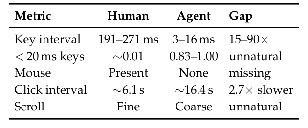
Table 8: Human vs. agent interaction dynamics.
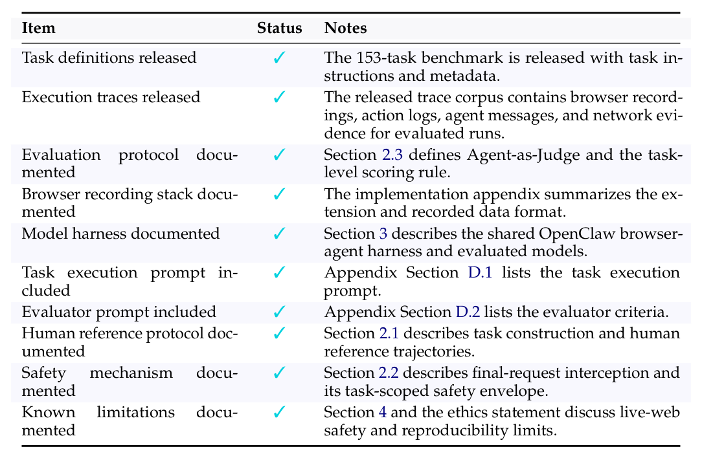
Table 9: Reproducibility checklist for CLAWBENCH.
27
27
GReproducibility and Ethical ConsiderationsG 可复现性与伦理考量
G.1 Potential RisksG.1 潜在风险
CLAWBENCH evaluates agents on live production websites, including workflows that would normally modify server-side state. The benchmark mitigates this risk through task-scoped final-request interception: for each task, human annotators identify the terminal HTTP request that would create an irreversible side effect, and the harness blocks that request before it reaches the server. This does not make arbitrary browsing side-effect-free, so the benchmark scope excludes workflows that cannot be controlled through the annotated terminal request.
CLAWBENCH 在实时生产网站上评估智能体，涉及的任务里不乏通常会修改服务器端状态的工作流。基准以任务范围的最终请求拦截化解该风险：每个任务由人工标注者预先识别会产生不可逆副作用的终结 HTTP 请求，harness 在其抵达服务器前将其阻断。这并不意味着任意浏览皆无副作用——因此基准范围明确排除无法由标注终结请求控制的工作流。
G.2 Artifact License and Intended UseG.2 产物许可与预期用途
The benchmark artifacts are intended for research on realistic web-agent evaluation. Re- leased task definitions, traces, prompts, and supporting code should be used only in accor- dance with their accompanying licenses and documentation. The artifacts are not intended for deploying autonomous agents on third-party websites or for bypassing website access controls, anti-bot systems, or terms of service.
基准产物面向真实网页智能体评估研究。发布的任务定义、轨迹、提示词与配套代码，仅应依照随附许可与文档使用。这些产物不用于在第三方网站上部署自主智能体，也不可用于绕过网站访问控制、反机器人系统或服务条款。
G.3 Data Privacy and Sensitive ContentG.3 数据隐私与敏感内容
The benchmark uses synthetic user profiles and benchmark-specific credentials rather than real user accounts or private personal data. Human reference runs and agent runs are recorded for evaluation and debugging, so released traces may include screenshots, interaction logs, HTTP metadata, and generated agent text. The release process should exclude private credentials and secrets and should document the structure of any retained trace data. The benchmark does not intentionally include offensive or harmful content, although interactions with live public websites may expose agents to uncontrolled natural web content.
基准使用合成用户资料与基准专属凭据，不涉及真实用户账户或私人个人数据。人类参考运行与智能体运行均被记录用于评估与调试，故发布轨迹可能包含截图、交互日志、HTTP 元数据及生成的智能体文本。发布流程应剔除私密凭据与机密，并说明所保留轨迹数据的结构。基准不有意包含冒犯性或有害内容——但与真实公共网站的交互仍可能使智能体接触不受控的自然网页内容。
G.4 Consent and Website InteractionG.4 授权与网站交互
Tasks are constructed from everyday web workflows on public websites. The final irre- versible request is blocked during benchmark execution, but agents still load pages and interact with live services before the terminal action. This setup is designed for ecological validity, and it should be used with care: researchers should respect website policies, avoid high-volume automated traffic, and avoid extending the benchmark to workflows that create real-world obligations or uncontrolled side effects.
任务取材于公共网站上的日常网页工作流。基准执行期间，最终的不可逆请求会被阻断，但在终结动作之前，智能体仍会加载页面并与真实服务交互。这一设置以生态有效性为出发点，使用时须谨慎：研究者应尊重网站政策、避免高流量自动化访问，并不得将基准扩展至会产生现实义务或不受控副作用的工作流。
G.5 AI Assistants in Research or WritingG.5 研究与写作中的 AI 助手
AI assistants were used to help inspect manuscript consistency, identify stale appendix material, and suggest wording improvements. The authors remain responsible for all technical claims, experimental results, and final manuscript text.
AI 助手用于协助检查稿件一致性、标记过时的附录材料并提出措辞改进建议。所有技术主张、实验结果与最终稿件文本，仍由作者全权负责。
28
28